06_LLM
LLM 概述
LLM（Large Language Model，大语言模型）是指在海量无标注文本数据上进行预训练得到的大型语言模型。通过学习大规模语料中的语言规律，模型能够理解、生成和推理自然语言文本。典型代表包括 GPT 系列、DeepSeek系列、Qwen 系列等。
大体现在三个方面：
- 一是参数量大，模型通常拥有数十亿到上万亿个参数
- 二是预训练数据量大，涵盖多语言、多领域的庞大语料
- 三是能力强大，具备跨任务的泛化与生成能力，能够在问答、摘要、翻译、编程等多种场景下展现出类似人类的语言理解和表达水平
LLM 发展历程
下面用 GPT 系列来讲述 LLM 发展的历程。
GPT 1
GPT-1（Generative Pre-trained Transformer-1）是 OpenAI 于 2018 年 6 月 发布的首个生成式预训练语言模型，其研究成果发表于论文《Improving Language Understanding by Generative Pre-Training》。
GPT-1 系统化地验证并推广了“预训练（Pre-training）+ 微调（Fine-tuning）”的训练范式：模型先在大规模无标注语料上进行语言建模预训练，再利用少量有监督数据在特定任务上微调。该方法显著提升了模型的迁移能力，使单一预训练模型能够适配多种自然语言任务。
1. 模型架构
GPT-1 的架构属于 Decoder-only，本质上就是 Transform 的 Decoder 堆叠而成，每个 Decoder 由 Masked Multi Self Attention 层、FNN 这两个核心子层组成，并通过 LayerNorm 与残差连接保持稳定的梯度传播。
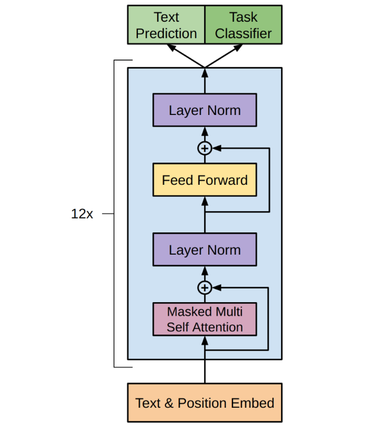
GPT-1 的架构创新主要可以概括为三点：
- Decoder-only 结构：从 Encoder-Decoder 架构简化为Decoder-only 结构，以适配自回归生成任务。
- 可学习位置嵌入：使用可学习位置嵌入，取代正弦位置编码，使模型能够在训练过程中自适应地学习词序关系。
- 权重共享机制：输入嵌入层与输出词表权重共享，减少参数量并提升训练稳定性。
2. 模型训练
GPT-1 的训练采用了“预训练（Pre-training） + 微调（Fine-tuning）”的两阶段范式。
预训练阶段就是在海量的未标注的文本语料上以 “Next-Token Prediction” 为目标，去训练模型，从而让模型学会通用的语言建模能力、了解广泛的世界知识、具备初步的推理能力。
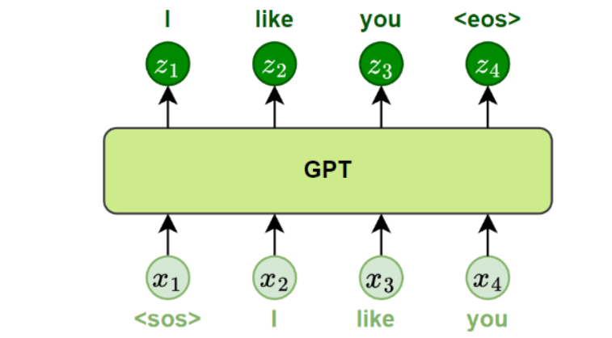
在微调阶段（Fine-tuning），通过在模型顶部加入轻量的任务分类层（Task Classifier），并在少量标注数据上进行有监督训练，模型能够快速适应不同任务场景。结果表明，微调后的 GPT-1 在多个 NLP 任务上显著优于从零训练的传统模型，验证了“预训练—微调”范式的有效性与通用性。
GPT 2
GPT-2是 OpenAI 于 2019 年发布的第二代生成式预训练语言模型，相关研究发表于论文《Language Models are Unsupervised Multitask Learners》。GPT-2 延续了GPT-1的 Transformer Decoder-only 架构，但参数规模提升了10倍。
1. 模型架构
GPT-2 延续了 GPT-1 的 Transformer Decoder-only 架构。只不过是堆叠的解码器更多了。同时，相比于 GPT-1，GPT-2采用了 Pre-LayerNorm 来缓解梯度传播不稳定的问题。具体原理在之后的 Pre-Norm 和 Post-Norm 的讲解会介绍。
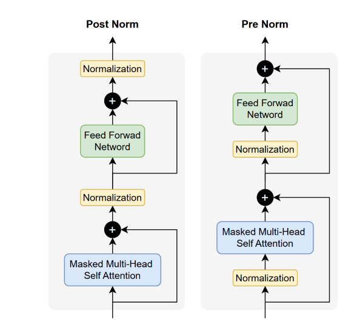
2. 模型训练
GPT-2 的训练仍采用 自回归语言建模（Autoregressive Language Modeling） 目标，即在给定前文的条件下预测下一个词（Next Token Prediction），以学习文本的语法与语义规律。
模型使用了 OpenAI 构建的 WebText 数据集，规模约 40GB，包含约 800 万篇网页内容，涵盖新闻、小说、科技、娱乐、社交等多个领域，为模型提供了更广泛的语言风格与知识来源。
GPT 3
GPT-3是 OpenAI 于 2020 年 5 月发布的第三代生成式预训练语言模型，研究成果发表于论文《Language Models are Few-Shot Learners》。
GPT-3 的核心创新在于首次系统提出并验证了“上下文学习（In-Context Learning）” 的概念：模型在使用阶段无需额外训练，仅依靠输入文本中的任务描述及少量示例即可理解并完成任。
1. 模型架构
GPT-3 延续了 Transformer Decoder-only 架构，但参数规模较 GPT-2 提升约百倍，达到了1750亿。
架构方面，与 GPT-2 相比，GPT-3 的主要区别在于在各个 Transformer Block 中交替使用稠密注意力（Dense Attention）和局部带状稀疏注意力（Locally Banded Sparse Attention）模式。
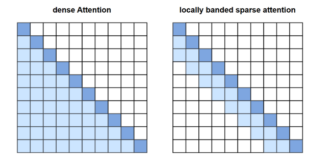
2. 模型训练
GPT-3 依旧采用 自回归语言建模（Autoregressive Language Modeling） 方式进行训练。训练数据约 570GB，包含约3000亿token，覆盖新闻、百科、文学与学术等领域。
模型在数千块 NVIDIA V100 GPU 上进行分布式并行训练，耗时数周完成。
InstructGPT
InstructGPT 是 OpenAI 于 2022 年初推出的生成式预训练语言模型，是 GPT-3 的改进版本，也是后续 ChatGPT 的直接前身。其研究成果发表于论文《Training language models to follow instructions with human feedback》。
GPT-3 再文本生成方面取得了巨大的成功，但是 GPT-3 在很多时候，无法给出很好的回答，这是因为 GPT-3 在训练过程中的目的是 “next token prediction”，所以，GPT-3 可能无法很好的理解人类指令的含义。
InstructGPT 在 GPT-3 基础上引入指令对齐训练，从而使模型能够更准确地理解并执行人类指令。
1. 模型架构
InstructGPT延续了GPT-3的架构。只是新增了额外的训练阶段
2. 模型训练
InstructGPT 的训练以 GPT-3 的预训练语言模型为基础，进一步采用了三阶段训练范式，具体步骤如下图所示：
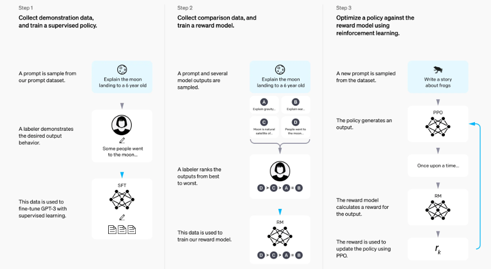
1、监督微调（Supervised Fine-tuning, SFT）
在第一阶段，OpenAI 收集了由人工标注者撰写的高质量 “指令-回答” 样本，组成训练数据集。这些样本覆盖常见的用户指令及对应的理想响应，具有较高的语言质量。
在训练过程中，模型在这些“指令-回答”对上进行监督微调，训练目标仍为“给定前文预测下一个词”。
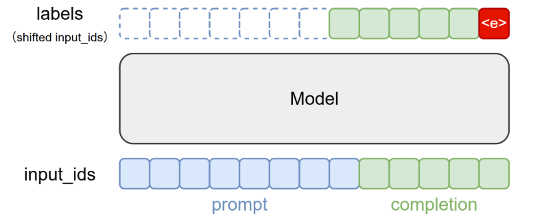
2、奖励模型（Reward Model, RM）
第二阶段构建奖励模型，用于后续强化学习过程中的反馈评估器，具体过程如下：
（1）使用经过 SFT 微调后的模型，针对同一条指令生成多个候选回答
（2）工标注者根据回答的质量、相关性、礼貌性、有用性等维度，对这些回答进行排序
（3）利用排序结果训练一个奖励模型，使其能够为任意给定回答输出一个偏好评分
3、强化学习（Reinforcement Learning from Human Feedback, RLHF）
这一阶段的核心目标是：通过人类偏好引导模型输出更加符合人类意图的回答。它以第二阶段训练好的奖励模型为评分工具，使用强化学习算法（PPO），对第一步经过SFT微调的语言模型进行进一步优化。
3. 模型能力
InstructGPT 相较于原始的 GPT-3，在多个维度上表现出更优的能力，主要体现在以下几个方面：
- 指令理解能力增强
- 输出质量更贴合人类偏好
- 无关、虚假或有害内容减
ChatGpt
ChatGPT 是 OpenAI 于 2022 年 11 月发布的一种具备对话能力的大型语言模型。它支持连续的自然语言交互，能够回答后续问题、承认错误、质疑用户前提、拒绝不当请求，在用户体验与安全性方面取得显著改进。
1. 模型架构
ChatGPT 是与 InstructGPT 同一技术路线下的兄弟模型，架构设计与 InstructGPT 类似，但具体细节未公开。
2. 模型训练
ChatGPT 的训练方法采用与 InstructGPT 相同的人类反馈强化学习（RLHF）策略，其核心区别在于数据集的设计与处理方式。
为了更好的处理多轮对话这样的场景，ChatGPT 使用了特别构建的对话格式数据集。至于训练的目标，还是 "next token prediction“，如下图：
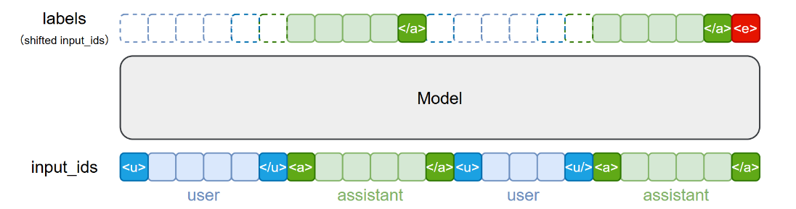
LLM 架构
LLM 基础架构
大型语言模型（LLM）大多基于 Transformer 架构构建，其中最常见的是 Decoder-only 架构。这一架构最早由 GPT 系列采用，并逐渐成为当前大多数主流模型的标准设计。LLM 的核心能力——理解语言、建模上下文、生成文本，都源于 Transformer 的模块化结构与高度可扩展性。
从整体上看，一个典型的 LLM 可以分为 输入层、Transformer Block 堆叠层和 输出层 三个部分：
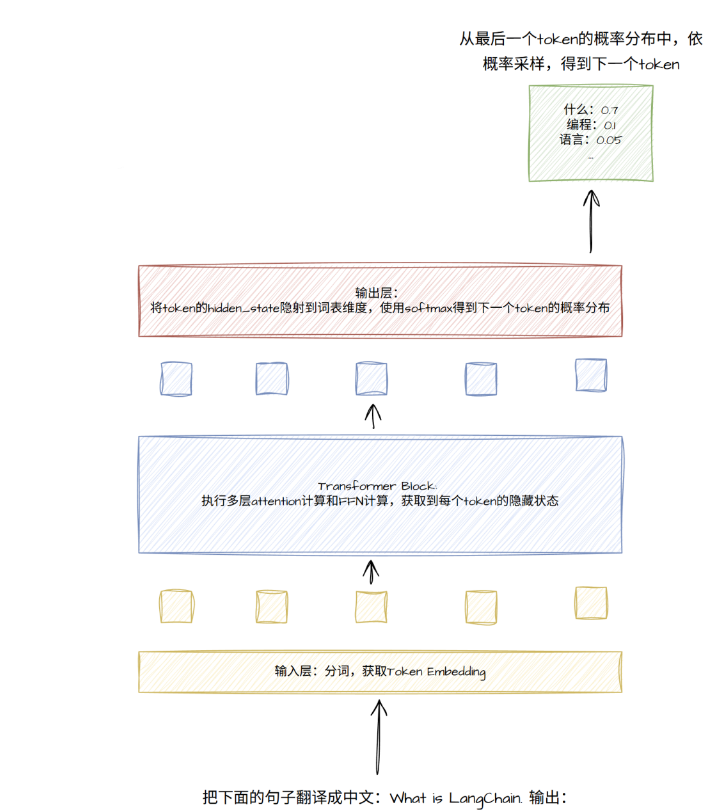
LLM 架构演进
模型真正的演进主要体现在内部组件层面，包括注意力机制、前馈网络、归一化与残差结构以及位置编码等模块的持续改进。
位置编码
由于 Transformer 的自注意力机制（Self-Attention）并不包含序列顺序信息，模型无法仅依靠注意力计算来判断 token 在序列中的相对位置。因此，需要向输入中显式加入位置编码（Position Encoding），以补充序列的位置信息。
正余弦位置编码
1）概述
正余弦位置编码（Sinusoidal Positional Encoding）是原始 Transformer 中采用的位置编码方式，它通过一组预定义的正弦与余弦函数为每个序列位置生成唯一向量：
其中：
- \(pos\)：Token 的绝对位置
- \(i\)：维度对的索引
- \(d\)：总维度
2）特点
特点
- 无需训练：编码由固定函数生成，不引入任何可学习参数，使用简单，不会随训练发生漂移。
- 隐含相对位置信息：正余弦位置编码的结构使其能够携带 token 之间的相对位置信息。
下面对 隐含相对位置信息 这一特性做详细解释。
正余弦位置编码的各维度是按频率成对排列的，每一对由同一频率对应的正弦值和余弦值组成。从位置 \(m\) 和位置 \(n\) 的位置编码中，任意选取一对频率为 \(\omega\) 的维度进行观察：
在 Transformer 中，注意力权重由 \(q\) 向量与 \(k\) 向量的内积决定：
考察这两组位置编码分量的内积：
利用三角恒等式可得：
这一结果直接反映了位置 \(m\) 与位置 \(n\) 之间的相对位置关系，且其他频率的维度也具备相同的形式。因此，在采用正余弦位置编码的情况下，两个 token 的注意力评分中会包含相对位置信息。
3）缺陷
缺陷
尽管正余弦位置编码具有良好的数学结构，其向量间的内积可直接反映相对位置关系，但在实际的 Transformer 注意力计算中，这种优势并不能完全有效发挥。
注意力计算中，评分为 \(score(m,n) = q_m k_n^{\mathsf{T}}\)，其中：
代入并令 \(A = W_Q W_K^{\mathsf{T}}\)，展开可得：
其中，仅有最后一项 \(PE_m A PE_n^{\mathsf{T}}\) 明确体现了位置编码之间的相互作用，是唯一直接与相对位置相关的部分。但由于矩阵 \(A = W_Q W_K^{\mathsf{T}}\) 是可学习参数，会在训练中不断变化，原本正余弦编码所具备的几何结构难以稳定保持。模型必须通过额外的学习来重新塑造或校正这种相对位置信息，而这种重建过程往往并不可靠，导致正余弦位置编码在理论上的优势无法在实践中完全体现。
可学习位置编码
1）概述
可学习位置编码（Learned Positional Embedding）是另一种常见的位置编码方式，曾广泛应用于早期的 Transformer 预训练模型（如 BERT、GPT-1/2 等）中。在这种方法中，模型为序列中的每个位置分配一个独立的可训练向量，这些向量在训练过程中与模型的其他参数一同更新，使模型能够从实际任务数据中自动学习位置表示。
2）特点
特点
- 灵活性高：位置向量完全由数据驱动学习，不受固定数学函数约束，能够更贴合训练语料的分布特点。
- 训练方式简单：其优化方式与词向量一致，实现成本低，不需要额外的结构设计，便于直接集成到 Transformer 中。
3）缺陷
缺陷
- 缺乏长度外推能力：可学习位置编码只在训练过的位置范围内定义，超出最大序列长度的位置没有对应的嵌入，导致模型无法在推理阶段处理更长的输入序列。
- 参数量随序列长度线性增长：位置向量数量与最大序列长度成正比，当需要支持长上下文时，参数开销迅速增大。
旋转位置编码 ⭐⭐⭐
1）概述
旋转位置编码（Rotary Position Embedding，RoPE）由国内研究者苏剑林在 RoFormer 论文中提出。与传统将位置编码与词向量相加的方式不同，RoPE 直接作用于 \(q\) 和 \(k\) 向量本身，使注意力计算能够更好地体现 token 之间的相对位置关系。在实践中，RoPE 表现稳定，尤其适用于长序列建模，因此已成为当前 LLM 普遍采用的位置编码方案。
2）原理
RoPE 的设计目标是让注意力得分能够直接体现 token 之间的相对位置差，可表示为：
即注意力评分仅依赖于第 \(m\) 个位置的 query 向量 \(q_m\)、第 \(n\) 个位置的 key 向量 \(k_n\)，以及两者之间的相对位置差 \(m-n\)。
为实现这一目标，RoPE 将 \(q\) 和 \(k\) 向量按维度两两分组，把每一对相邻维度视为一个二维子向量，并对每个二维子向量施加与位置及维度相关的旋转，如下图所示：
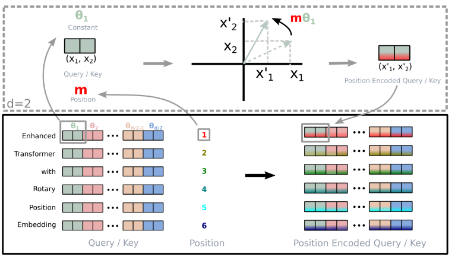
位置 \(m\) 的 token，其 \(q\) 和 \(k\) 向量的第 \(i\) 对二维子向量会旋转 \(m \cdot \theta_i\) 的角度，\(\theta_i\) 的定义如下：
其中 \(d\) 表示 \(q\) 和 \(k\) 向量的维度。
下面以位置 \(m\) 对位置 \(n\) 的注意力评分为例，说明 RoPE 是如何实现其设计目标的。
位置 \(m\) 的 \(q\) 向量中的第 \(i\) 对二维子向量 \(q_{m,i}\) 需要旋转 \(m\theta_i\) 度，其旋转由如下二维旋转矩阵实现：
旋转后的子向量为：
位置 \(n\) 的 \(k\) 向量中的第 \(i\) 对二维子向量 \(k_{n,i}\) 需要旋转 \(n\theta_i\) 度，其旋转矩阵为：
旋转后的子向量为：
位置 \(m\) 对位置 \(n\) 的注意力评分中，第 \(i\) 对二维子向量的贡献为：
二维旋转矩阵满足如下重要性质：
（该性质可通过旋转矩阵的代数运算推导：由于旋转矩阵是正交矩阵，满足 \(R(\alpha)^{\mathsf{T}} = R(-\alpha)\)，从而 \(R(m\theta) R(n\theta)^{\mathsf{T}} = R(m\theta) R(-n\theta) = R((m-n)\theta)\)。）
代入上式可得：
可以看到，第 \(i\) 对二维子向量的注意力贡献仅依赖 \(q_{m,i}\)、\(k_{n,i}\) 和 \((m-n)\)。对所有二维子向量求和后，即可得到完整的注意力得分满足：
这说明 RoPE 在数学结构上保证了注意力机制能够自然表达 token 之间的相对位置信息，从而实现其设计目标。
3）特点
特点
- 显式编码相对位置信息：旋转后注意力得分天然依赖 \(m-n\)，直接表达相对位置关系。
- 零参数且训练稳定：无需学习位置向量，结构固定，不随训练破坏几何性质。
- 更容易外推：数学结构不依赖训练长度，可在推理中处理更长序列。（注意：若推理文本长度与训练文本长度之间存在较大差距，仍会存在外推问题。）
4）实现
# 1. 先计算 rope 用到的 sin,cos 值
def compute_rope_params(head_dim, theta_base=10_000, context_length=4096, dtype=torch.float32):
"""预计算 RoPE 所需的 cos 和 sin 值"""
assert head_dim % 2 == 0, "Embedding dimension must be even"
# 计算逆频率：theta_base^(-2i/d)，用于控制不同维度的旋转速度
inv_freq = 1.0 / (theta_base ** (torch.arange(0, head_dim, 2, dtype=dtype).float() / head_dim))
# 生成位置序列：[0, 1, 2, ..., context_length-1]
positions = torch.arange(context_length, dtype=dtype)
# 计算每个位置、每个维度的旋转角度：position * inv_freq
# 形状：(context_length, head_dim // 2)
angles = positions.unsqueeze(1) * inv_freq.unsqueeze(0)
# 将角度复制一份，使其维度扩展到 head_dim
angles = torch.cat([angles, angles], dim=1) # Shape: (context_length, head_dim)
# 预计算并返回余弦和正弦值
cos = torch.cos(angles)
sin = torch.sin(angles)
return cos, sin
# 2. 对输入张量应用旋转位置编码（x与旋转矩阵做乘法）
def apply_rope(x, cos, sin, offset=0):
"""
对输入张量应用旋转位置编码。
注意：此处的旋转配对方式是“前后半部分配对”（如 0与4配对，1与5配对），
而不是常见的相邻配对（0与1，2与3）。
"""
batch_size, num_heads, seq_len, head_dim = x.shape
assert head_dim % 2 == 0, "Head dimension must be even"
# 将输入在最后一维上对半切开
x1 = x[..., : head_dim // 2] # 前半部分
x2 = x[..., head_dim // 2:] # 后半部分
# 截取当前序列对应的 cos/sin，并扩展维度以匹配输入形状
cos = cos[offset:offset + seq_len, :].unsqueeze(0).unsqueeze(0) # (1, 1, seq_len, head_dim)
sin = sin[offset:offset + seq_len, :].unsqueeze(0).unsqueeze(0) # (1, 1, seq_len, head_dim)
# 推导：
# [a, b] * 旋转矩阵 -> [a * cos - b * sin, b * cos + a * sin]
# 上面的计算等价于：[a, b] * cos + [-b, a] * sin
# 构造旋转矩阵所需的负半部分：[-x2, x1]
rotated = torch.cat((-x2, x1), dim=-1) # 这步就是在算[-b, a]
# 执行旋转公式：x * cos + rotate(x) * sin
x_rotated = (x * cos) + (rotated * sin)
# 恢复到原始数据类型并返回
return x_rotated.to(dtype=x.dtype)
Attention
注意力机制（Attention）是 Transformer 中最核心的模块，用于刻画序列中不同位置之间的依赖关系，决定模型在生成下一个 token 时应如何利用上下文。其能力直接影响模型的语义理解、长程依赖建模与文本生成质量。
随着模型规模不断扩大、推理序列越来越长，传统的多头注意力逐渐暴露出工程瓶颈。为解决这些问题，业界提出了一系列改进结构，在保持模型能力的同时显著提升了推理效率。
1. MHA（Multi-Head Attention）
概述
MHA 是 Transformer 最初采用的注意力机制。其通过将输入分别映射为多组 Query、Key、Value，并在多个注意力头上并行计算注意力分布，使模型能够从不同子空间捕捉序列关系，从而提升表达能力。
KV Cache
在自回归生成过程中，模型需逐 token 生成输出。每生成一个新 token，都要与所有历史 token 进行注意力计算。如果每一步都从头计算历史序列的 Key 和 Value，将造成巨大的重复计算开销。
KV Cache 正是为解决这一问题而引入的核心优化：在推理阶段将历史 token 的 Key 和 Value 缓存下来，供后续步骤直接使用。生成下一个 token 时，只需计算当前 token 的 Q、K、V，再与缓存的 K/V 做一次注意力匹配即可，大幅减少了不必要的计算量。
类比：KV Cache 相当于记笔记而不是每次都重新查资料——把算过的结果存下来，避免重复劳动。
MHA 的瓶颈
MHA 的瓶颈
KV Cache 虽减少了重复计算，但需持续保存过往 token 的 Key 和 Value。序列越长、层数越多，缓存量不断累积。在 MHA 中，每个注意力头都独立生成并存储一组 K/V，使得缓存规模在原有基础上进一步放大——这正是 MHA 在大模型推理中的主要瓶颈。
2. MQA（Multi-Query Attention）
概述
MQA（Multi-Query Attention，多查询注意力）由 Google 在 2019 年论文 Fast Transformer Decoding: One Write-Head is All You Need 中提出，旨在减少推理阶段 KV Cache 的存储与内存带宽开销。
核心思想
让多个注意力头共享同一套 Key 和 Value，而不是像 MHA 那样为每个头分别维护独立的 K/V。
核心优势
- KV Cache 大幅缩减：所有头共享一套 K/V，缓存量级从 \(H\) 套降为 \(1\) 套（\(H\) 为注意力头数）。
- 内存带宽压力骤降：只需加载一份 K/V，显著减少显存读取瓶颈。
- 推理速度显著提升：上述优化直接加速解码过程，实测可在几乎不损失精度的情况下使解码速度提升数倍。
代价
共享机制会略微削弱注意力头的表达能力，精度略逊于传统 MHA。但在实际应用中，这种损失非常小，整体收益远大于代价。
3. GQA（Group-Query Attention）
概述
GQA（Group-Query Attention，分组查询注意力）由 Google 在论文 GQA: Training Generalized Multi-Query Transformer Layers 中提出，是在 MQA 基础上的进一步改进方案，旨在弥补 MQA 因所有头共享同一套 K/V 而造成的表达能力下降。
核心思想
将注意力头划分为多个组（Group），每组内部的多个 Query 共享同一套 Key 和 Value，而不同组之间则使用独立的 K/V。
优势
- 相比 MHA：不再为每个头维护独立 K/V，KV Cache 存储需求大幅降低。
- 相比 MQA：不是所有头共享唯一 K/V，而是分组共享，注意力头间保持更高的多样性和表达能力。
GQA 在 推理效率 和 表达能力 之间实现了更优平衡，因此被当前主流大模型广泛采用（如 Llama 2/3、Mistral、Gemma 等），在长序列推理和高并发场景中表现出色。
小结对比
| 方案 | K/V 共享方式 | KV Cache 量级 | 表达能力 | 典型模型 |
|---|---|---|---|---|
| MHA | 每头独立 | \(H\) 套 | 最高 | Transformer 原始版 |
| MQA | 所有头共享 | \(1\) 套 | 略降 | PaLM |
| GQA | 分组内共享 | \(G\) 套 | 接近 MHA | Llama 2/3, Mistral |
Feed Forward Network
前馈网络（Feed-Forward Network, FFN）是 Transformer Block 中继注意力之后的第二大核心组件，用于对每个 token 的表示进行独立的非线性变换。其典型的「升维 → 激活 → 降维」结构，使模型能够在每个位置上学习高维特征，是 Transformer 表达能力的重要来源。
FFN 的演进主要集中在 激活函数 和 整体结构 两个方向。
1. 激活函数演进
激活函数为 FFN 引入非线性，是提升模型表达能力与稳定性的关键模块。随着模型规模不断扩大，激活函数从简单的线性截断逐步演进到平滑非线性，再到具备门控能力的结构化形式。
1）ReLU
ReLU（Rectified Linear Unit）是深度学习早期广泛应用的激活函数：
优势
- 正区间梯度恒为 1，有效缓解梯度消失问题
- 计算极简，只需一次比较操作
缺陷
- 负区间梯度恒为零，引发 "死亡神经元" 现象——神经元一旦进入负区间可能永久失活
- 非线性较弱，在深层 Transformer 中难以提供足够的梯度平滑性与稳定性
由于上述缺陷，ReLU 在现代大型语言模型中已基本退出主流。
2）GELU
GELU（Gaussian Error Linear Unit）由 Hendrycks & Gimpel, 2016 提出，是早期 Transformer 预训练模型（BERT、GPT-2/3 等）广泛采用的激活函数。
核心思想是不再硬性截断，而是通过随输入大小平滑变化的缩放系数来柔性控制激活强度：
其中 \(\Phi(x)\) 表示标准正态分布的累积分布函数。
- \(x\) 越大，\(\Phi(x) \to 1\)，输出趋近于 \(x\)
- \(x\) 越小，\(\Phi(x) \to 0\)，输出逐渐衰减为 \(0\)
- 在 \(x \approx 0\) 附近平滑过渡
相比 ReLU 的优势
- 全域连续可导，深层网络中梯度传播更稳定
- 不会出现「神经元死亡」问题
3）SiLU / Swish
SiLU（Sigmoid Linear Unit）使用 sigmoid 函数对线性输入进行加权，得到柔和的非线性变换：
Swish 可视为 SiLU 的一般化形式：
当 \(\beta = 1\) 时，Swish 与 SiLU 完全等价。虽然原论文提出让 \(\beta\) 可学习，但实际收益有限，主流实现通常固定 \(\beta = 1\)。因此在工程实践中 Swish 与 SiLU 往往混用。
特点
得益于连续可导的结构，SiLU 在深层网络训练中具有良好的优化稳定性，与 GELU 经验性能相近。
4）GLU 及其变体
GLU（Gated Linear Unit）及其变体是当前 LLM 中最主流的 FFN 结构。与 ReLU、GELU 等单路激活不同，GLU 类结构采用 「主分支 × 门控分支」 的双分支设计，通过门控机制对信息流进行更加细致的筛选：
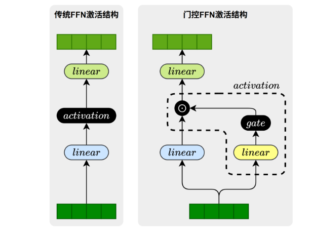
其中 \(\odot\) 表示逐元素相乘。门控分支所用的激活函数不同，形成了多种 GLU 变体：
| 变体 | 门控函数 | 典型应用 |
|---|---|---|
| GLU | \(\sigma(x)\)（Sigmoid） | 早期门控实验 |
| GEGLU | \(\text{GELU}(x)\) | T5 |
| SwiGLU | \(\text{SiLU}(x)\) | Llama, Qwen, DeepSeek, Mistral |
SwiGLU — 当前主流选择
在众多变体中，SwiGLU（使用 SiLU 作为门控函数）在性能与训练稳定性方面表现最优，已成为当前主流 LLM（Llama 2/3、Qwen、DeepSeek、Mistral 等）的默认 FFN 结构。
2. MoE（Mixture of Experts）
概述
MoE（Mixture of Experts，混合专家模型）是在 FFN 基础上的一种结构扩展。其核心思想是：使用多个并行的 FFN 专家替代单一 FFN 层，并通过 Router（路由器） 根据输入 Token 的特征选择少量最合适的专家参与计算。不同类型的输入由擅长处理该类模式的专家负责，显著增强模型的表达能力。
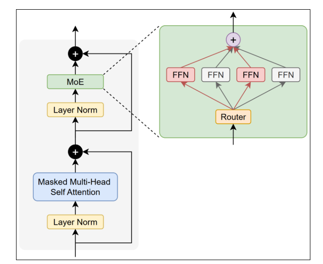
MoE 已成为当前主流大语言模型（如 Mixtral 8x7B、DeepSeek-V2、Qwen2-MoE 等）广泛采用的关键结构。
工作流程
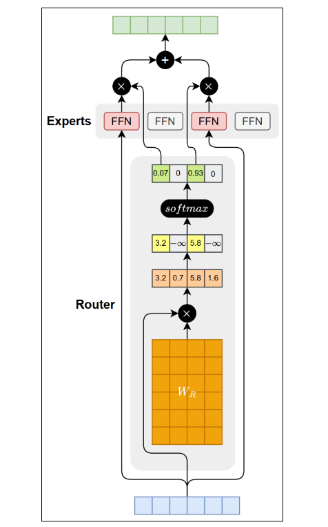
- 路由得分计算：Router 接收 Token 的隐藏表示，通过线性映射为所有专家生成一组得分。
- 选择 Top-k 专家：选取得分最高的 \(k\) 个专家（通常 \(k=2\)），其余专家本次不参与计算。
- 计算路由权重：对被选中的专家得分执行 softmax，得到归一化权重，表示各专家的贡献比例。
- 专家执行前向计算：被激活的专家分别对输入 Token 进行独立 FFN 计算，生成各自的输出。
- 加权合并输出：将所有激活专家的输出按路由权重加权求和，得到 Token 在 MoE 层的最终表示。
核心优势
- 高容量、低计算：稀疏激活机制使每次前向传播仅有 \(k\) 个专家参与计算。在不增加实际计算量的前提下，大幅提升模型总参数量（模型容量），实现「高容量、低计算」的效率结构。
- 专家分工，增强泛化：Router 动态分配机制促使专家自动形成功能分化，每个专家专注于学习特定模式或数据子集，显著增强模型的表达能力和泛化性能。
- 天然适合分布式扩展：专家模块相互独立，可轻松分布到大规模计算集群的不同设备上并行运行，极大提升模型的可扩展性。
残差连接与归一化
残差连接（Residual Connection）与归一化（Normalization）是 Transformer 稳定训练的两大基础机制。残差连接为深层网络提供恒等映射的梯度捷径，防止梯度消失；归一化则控制激活值的分布范围，防止数值不稳定。二者协同作用，使 Transformer 能够堆叠数十甚至上百层。
随着模型深度与规模增加，归一化方式及其放置位置经历了持续的优化演进。
1. RMSNorm
概述
RMSNorm（Root Mean Square Normalization）是对传统 LayerNorm 的一种简化变体，由 Zhang & Sennrich, 2019 提出。它去除了均值标准化操作，仅基于输入特征的均方根（RMS）进行缩放，在保持归一化效果的同时降低计算复杂度。
核心公式
其中：
- \(x \in \mathbb{R}^d\)：输入向量
- \(\gamma\)：可学习的缩放参数
- \(\epsilon\)：防止除零的微小常数
为什么可以去掉均值？
实践表明，均值项在深层 Transformer 中对稳定性贡献有限，去除均值不仅不会影响模型性能，反而能带来更稳定、更高效的归一化形式。目前，RMSNorm 已成为主流 LLM 中最常用的归一化方式（如 Llama、Qwen、DeepSeek 等均采用 RMSNorm）。
2. 归一化放置位置
归一化层的放置位置会显著影响训练稳定性与梯度传播效率。随着架构演进，主要形成了 Post Norm 和 Pre Norm 两种方案。
1）Post Norm
Post Norm 是原始 Transformer 采用的归一化方式，在子层计算完成并与残差相加之后进行归一化：
核心问题：削弱恒等梯度路径
标准残差结构 \(y = x + F(x)\) 的反向传播为：
其中的 "1" 是一条不改变梯度方向和大小的恒等映射路径，为深层网络提供了稳定的「直通」梯度通道。
而在 Post Norm 中，反向传播变为：
归一化操作对输入进行缩放，梯度回流时也被相应扰动，原本应保持恒等的梯度路径不再为 1。在深层 Transformer 中，这种扰动会层层累积，使训练更加不稳定。因此，Post Norm 在现代大规模模型中已基本不再使用。
2）Pre Norm
Pre Norm 是当前大多数大语言模型采用的主流方式。在进入子层之前先对输入进行归一化，再执行子模块计算并与残差相加：
保留恒等梯度路径
Pre Norm 的设计充分保留了残差连接的关键特性：
归一化位于 \(F\) 内部，不影响残差路径上的梯度回传。正因如此，Pre Norm 已成为现代 LLM 的事实标准（GPT-3、Llama 系列、Qwen 等均采用此方案）。
小结对比
| 方案 | 结构 | 恒等梯度路径 | 训练稳定性 | 典型模型 |
|---|---|---|---|---|
| Post Norm | \(y = \text{Norm}(x + F(x))\) | 被扰动 ❌ | 不稳定 | 原始 Transformer |
| Pre Norm | \(y = x + F(\text{Norm}(x))\) | 完整保留 ✅ | 稳定 | GPT-3, Llama, Qwen |
LLM 源码分析（Qwen3）
Qwen3 是现代LLM的代表，通过学习其结构，有助于了解GQA，RoPE以及RMSNorm等改进结构是如何在现代LLM架构中使用的。
整体模型结构
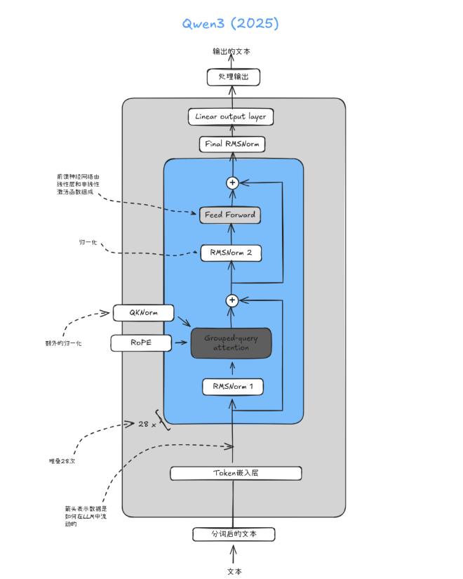
class Qwen3Model(nn.Module):
def __init__(self, cfg):
super().__init__()
# 输入层：token_embedding
self.tok_emb = nn.Embedding(cfg["vocab_size"], cfg["emb_dim"], dtype=cfg["dtype"])
# transformer block
self.trf_blocks = nn.ModuleList(
[TransformerBlock(cfg) for _ in range(cfg["n_layers"])]
)
self.final_norm = RMSNorm(cfg["emb_dim"])
self.out_head = nn.Linear(cfg["emb_dim"], cfg["vocab_size"], bias=False, dtype=cfg["dtype"])
# 没有传入head_dim时，默认使用emb_dim // n_heads作为head_dim
if cfg["head_dim"] is None:
head_dim = cfg["emb_dim"] // cfg["n_heads"]
else:
head_dim = cfg["head_dim"]
# 获取到每个位置的每组向量的旋转的余弦值和正弦值
cos, sin = compute_rope_params(
head_dim=head_dim,
theta_base=cfg["rope_base"],
context_length=cfg["context_length"]
)
self.register_buffer("cos", cos, persistent=False)
self.register_buffer("sin", sin, persistent=False)
self.cfg = cfg
self.current_pos = 0 # 追踪KV Cache 当前位置的索引
def forward(self, in_idx, cache=None):
# 前向传播
# 输入层：获取到token_embedding
tok_embeds = self.tok_emb(in_idx)
x = tok_embeds
num_tokens = x.shape[1]
if cache is not None:
pos_start = self.current_pos
pos_end = pos_start + num_tokens
self.current_pos = pos_end
mask = torch.triu(
torch.ones(pos_end, pos_end, device=x.device, dtype=torch.bool), diagonal=1
)[pos_start:pos_end, :pos_end]
else:
pos_start = 0
mask = torch.triu(
torch.ones(num_tokens, num_tokens, device=x.device, dtype=torch.bool), diagonal=1
)
mask = mask[None, None, :, :]
for i, block in enumerate(self.trf_blocks):
blk_cache = cache.get(i) if cache else None
x, new_blk_cache = block(x, mask, self.cos, self.sin,
start_pos=pos_start,
cache=blk_cache)
if cache is not None:
cache.update(i, new_blk_cache)
# 输出前先进行层归一化
x = self.final_norm(x)
# 输出层
logits = self.out_head(x.to(self.cfg["dtype"]))
return logits
def reset_kv_cache(self):
self.current_pos = 0
Transformer Block
class TransformerBlock(nn.Module):
def __init__(self, cfg):
super().__init__()
# GQA (Grouped Query Attention) 注意力层，支持多查询分组以降低显存和计算开销
self.att = GroupedQueryAttention(
d_in=cfg["emb_dim"],
num_heads=cfg["n_heads"],
head_dim=cfg["head_dim"],
num_kv_groups=cfg["n_kv_groups"], # KV头数分组数量，通常小于Query头数
qk_norm=cfg["qk_norm"], # 是否对Q和K进行归一化
dtype=cfg["dtype"]
)
# 前馈神经网络层 (FFN)
self.ff = FeedForward(cfg)
# 注意力子层前的 RMSNorm 归一化
self.norm1 = RMSNorm(cfg["emb_dim"], eps=1e-6)
# FFN子层前的 RMSNorm 归一化
self.norm2 = RMSNorm(cfg["emb_dim"], eps=1e-6)
def forward(self, x, mask, cos, sin, start_pos=0, cache=None):
# 保存原始输入，用于后续的残差连接 (Pre-Norm 架构)
shortcut = x
x = self.norm1(x) # 对输入进行归一化
# 执行 GQA 注意力计算，传入 RoPE 参数、起始位置和 KV 缓存
x, next_cache = self.att(x, mask, cos, sin, start_pos=start_pos, cache=cache)
x = x + shortcut # 残差连接：将注意力输出与原始输入相加
# 保存注意力残差后的结果，用于 FFN 的残差连接
shortcut = x
x = self.norm2(x) # 对输入进行归一化
x = self.ff(x) # 执行前馈神经网络计算
x = x + shortcut # 残差连接：将 FFN 输出与上一层输出相加
# 返回当前层的隐藏状态以及更新后的 KV 缓存
return x, next_cache
class FeedForward(nn.Module):
def __init__(self, cfg):
super().__init__()
# 使用 SwiGLU 激活函数的 FFN 结构，包含三个线性层且均不使用偏置
self.fc1 = nn.Linear(cfg["emb_dim"], cfg["hidden_dim"], dtype=cfg["dtype"], bias=False)
self.fc2 = nn.Linear(cfg["emb_dim"], cfg["hidden_dim"], dtype=cfg["dtype"], bias=False)
self.fc3 = nn.Linear(cfg["hidden_dim"], cfg["emb_dim"], dtype=cfg["dtype"], bias=False)
def forward(self, x):
x_fc1 = self.fc1(x) # 第一个线性变换
x_fc2 = self.fc2(x) # 第二个线性变换（作为门控机制）
# SwiGLU 激活：SiLU(fc1(x)) 与 fc2(x) 逐元素相乘
x = nn.functional.silu(x_fc1) * x_fc2
return self.fc3(x) # 降维投影回原始嵌入维度
class RMSNorm(nn.Module):
def __init__(self, emb_dim, eps=1e-6, bias=False, qwen3_compatible=True):
super().__init__()
self.eps = eps
self.qwen3_compatible = qwen3_compatible # 是否开启 Qwen3 兼容模式（强制转 float32 防止精度溢出）
self.scale = nn.Parameter(torch.ones(emb_dim)) # 可学习的缩放参数
# 如果指定了 bias，则创建可学习的平移参数（标准 RMSNorm 通常不包含 shift）
self.shift = nn.Parameter(torch.zeros(emb_dim)) if bias else None
def forward(self, x):
input_dtype = x.dtype # 记录原始数据类型，以便最后恢复
# Qwen3 兼容模式：在 float32 下计算方差，避免低精度（如 fp16/bf16）导致的数值不稳定
if self.qwen3_compatible:
x = x.to(torch.float32)
# 计算每个 token 向量在最后一个维度上的均方差
variance = x.pow(2).mean(dim=-1, keepdim=True)
# 执行 RMS 归一化：x / sqrt(variance + eps)
norm_x = x * torch.rsqrt(variance + self.eps)
norm_x = norm_x * self.scale # 应用可学习的缩放
if self.shift is not None:
norm_x = norm_x + self.shift # 应用可学习的平移（可选）
return norm_x.to(input_dtype) # 恢复到原始数据类型
GQA 层结构
class GroupedQueryAttention(nn.Module):
def __init__(
self, d_in, num_heads, num_kv_groups, head_dim=None, qk_norm=False, dtype=None
):
super().__init__()
# 确保 Query 的头数可以被 KV 的分组数整除
assert num_heads % num_kv_groups == 0, "num_heads must be divisible by num_kv_groups"
self.num_heads = num_heads # Query 的总头数
self.num_kv_groups = num_kv_groups # Key/Value 的分组数
# 每个 KV 组需要被多少个 Query 头共享（例如：32个Query头，4个KV组，则 group_size=8）
self.group_size = num_heads // num_kv_groups
# 如果未指定 head_dim，则默认通过总维度除以头数来计算
if head_dim is None:
assert d_in % num_heads == 0, "`d_in` must be divisible by `num_heads` if `head_dim` is not set"
head_dim = d_in // num_heads
self.head_dim = head_dim
self.d_out = num_heads * head_dim # 输出总维度
# Query 层：输出维度为全量的 num_heads * head_dim self.W_query = nn.Linear(d_in, self.d_out, bias=False, dtype=dtype)
# Key 和 Value 层：输出维度仅为 num_kv_groups * head_dim，大幅减少参数量和显存占用
self.W_key = nn.Linear(d_in, num_kv_groups * head_dim, bias=False, dtype=dtype)
self.W_value = nn.Linear(d_in, num_kv_groups * head_dim, bias=False, dtype=dtype)
# 注意力输出后的线性投影层
self.out_proj = nn.Linear(self.d_out, d_in, bias=False, dtype=dtype)
# 可选的 QK 归一化（有助于训练稳定性，防止注意力分数过大）
if qk_norm:
self.q_norm = RMSNorm(head_dim, eps=1e-6)
self.k_norm = RMSNorm(head_dim, eps=1e-6)
else:
self.q_norm = self.k_norm = None
def forward(self, x, mask, cos, sin, start_pos=0, cache=None):
b, num_tokens, _ = x.shape
# 1. 线性投影获取 Q, K, V queries = self.W_query(x) # (b, num_tokens, num_heads * head_dim)
keys = self.W_key(x) # (b, num_tokens, num_kv_groups * head_dim)
values = self.W_value(x) # (b, num_tokens, num_kv_groups * head_dim)
# 2. 重塑形状并调整维度顺序，方便后续矩阵乘法
# Queries: (b, num_heads, num_tokens, head_dim)
queries = queries.view(b, num_tokens, self.num_heads, self.head_dim).transpose(1, 2)
# Keys/Values: (b, num_kv_groups, num_tokens, head_dim)
keys_new = keys.view(b, num_tokens, self.num_kv_groups, self.head_dim).transpose(1, 2)
values_new = values.view(b, num_tokens, self.num_kv_groups, self.head_dim).transpose(1, 2)
# 3. 对 Q 和 K 进行额外的 RMSNorm 归一化
if self.q_norm:
queries = self.q_norm(queries)
if self.k_norm:
keys_new = self.k_norm(keys_new)
# 4. 应用旋转位置编码 (RoPE) queries = apply_rope(queries, cos, sin, offset=start_pos)
keys_new = apply_rope(keys_new, cos, sin, offset=start_pos)
# 5. KV Cache 处理：如果有缓存，则将当前步的 KV 拼接到历史 KV 上
if cache is not None:
prev_k, prev_v = cache
keys = torch.cat([prev_k, keys_new], dim=2)
values = torch.cat([prev_v, values_new], dim=2)
else:
start_pos = 0 # 无缓存时重置位置
keys, values = keys_new, values_new
next_cache = (keys, values) # 保存更新后的 KV 缓存
# 6. GQA 核心：将 KV 在头维度上重复，使其与 Query 的头数对齐
keys = keys.repeat_interleave(self.group_size, dim=1)
values = values.repeat_interleave(self.group_size, dim=1)
# 7. 计算注意力得分并应用因果掩码
attn_scores = queries @ keys.transpose(2, 3) # (b, num_heads, num_tokens, total_kv_len)
attn_scores = attn_scores.masked_fill(mask, -torch.inf)
attn_weights = torch.softmax(attn_scores / self.head_dim ** 0.5, dim=-1)
# 8. 加权聚合 Value，重塑形状并投影回原始维度
context = (attn_weights @ values).transpose(1, 2).reshape(b, num_tokens, self.d_out)
return self.out_proj(context), next_cache
KV cache 分析
下面基于上述 Qwen3 简 化代码，逐层剖析 KV Cache 的实现细节。
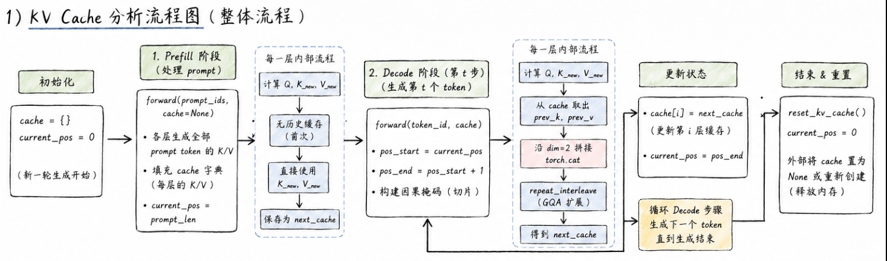
1. 数据结构
KV Cache 是一个字典，以层索引为键，值为对应层的 K/V 张量元组：
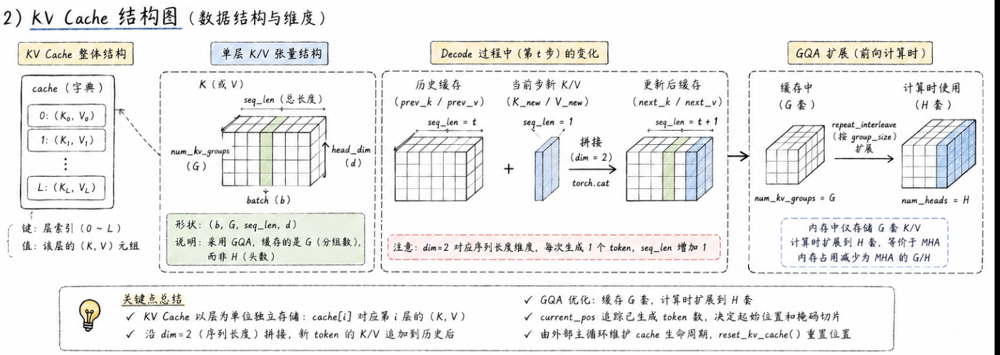
每一层的 K/V 形状为 (batch_size, num_kv_groups, total_seq_len, head_dim)。由于采用 GQA，缓存的是分组数 num_kv_groups 而非头数 num_heads，这是 KV Cache 内存缩减的关键。
2. 位置追踪机制
在 Qwen3Model 中通过 self.current_pos 追踪当前生成到的位置：
# 初始化为 0
self.current_pos = 0
def forward(self, in_idx, cache=None):
num_tokens = x.shape[1]
if cache is not None:
pos_start = self.current_pos
pos_end = pos_start + num_tokens
self.current_pos = pos_end # 推进位置
- 首次调用（
cache=None）：pos_start=0，从输入序列起始位置计算 - 后续解码（
cache非空）：根据已缓存 token 数量确定当前步的起始位置
3. 因果掩码构建
if cache is not None:
mask = torch.triu(
torch.ones(pos_end, pos_end, dtype=torch.bool), diagonal=1
)[pos_start:pos_end, :pos_end]
为何这种切片能正确处理掩码？
解码阶段 pos_start > 0，掩码切片 [pos_start:pos_end, :pos_end] 的语义为：
- 行（query 侧）：取当前步的 token（
pos_start到pos_end） - 列（key 侧）：取全部历史 token（
0到pos_end）
这样，每个新 token 都能看到所有过去的 token（包括缓存的），同时看不到未来的 token，完美适配自回归生成。
4. 逐层传递与更新
每层 Transformer Block 从字典中取出自己的缓存，处理后更新回去：
for i, block in enumerate(self.trf_blocks):
blk_cache = cache.get(i) if cache else None # 取出第 i 层的缓存
x, new_blk_cache = block(x, mask, cos, sin,
start_pos=pos_start,
cache=blk_cache)
if cache is not None:
cache.update(i, new_blk_cache) # 更新第 i 层的缓存
每一层的 cache 生命周期完全独立。这符合 Transformer 各层并行存储的实际情况——第 0 层和第 1 层的 K/V 互不影响。
5. 核心操作：拼接新 K/V
在 GroupedQueryAttention.forward() 中，第 999-1007 行完成 KV Cache 的最核心操作：
# 5. KV Cache 处理：如果有缓存，则将当前步的 KV 拼接到历史 KV 上
if cache is not None:
prev_k, prev_v = cache
keys = torch.cat([prev_k, keys_new], dim=2) # 沿 token 维度拼接
values = torch.cat([prev_v, values_new], dim=2)
else:
start_pos = 0
keys, values = keys_new, values_new
next_cache = (keys, values) # 保存更新后的 KV 缓存
图示如下：
dim=2 (token 维度)
◄──── 拼接 ────►
┌────────────────────┐ ┌────────────────────┐ ┌────────────────────────────┐
│ prev_k (cached) │ │ keys_new (当前步) │ │ keys (更新后缓存) │
│ shape: (b, G, t) │ │ shape: (b, G, 1) │ │ shape: (b, G, t+1) │
└────────────────────┘ └────────────────────┘ └────────────────────────────┘
为何沿 dim=2 拼接？
K/V 张量的维度布局为 (batch, num_kv_groups, seq_len, head_dim)，dim=2 对应序列长度维度。每次生成一个新 token，该 token 的 K/V 向量沿序列维度拼接到历史缓存后面，序列长度随之增加 1。
6. GQA 优化：重复 KV
拼接完成后，对 KV 执行 repeat_interleave，将 num_kv_groups 份 KV 扩展到 num_heads 份：
keys = keys.repeat_interleave(self.group_size, dim=1)
values = values.repeat_interleave(self.group_size, dim=1)
这意味着 KV Cache 实际存储的是 G 套（分组数），而非 H 套（头数）。在前向计算时再通过 repeat 扩展到 H 套，等价于 MHA 的效果，但内存占用仅为 MHA 的 \(G/H\)。
7. 生命周期管理
- 重置时机：每次开启新一轮生成前调用
reset_kv_cache() - 外部调用方（推理主循环）负责维护 cache 字典的生命周期——在
reset_kv_cache()后将 cache 置为None或重新创建空字典 - 内存释放：Python 的 GC 会在 cache 字典不再被引用时自动回收
LLM 微调
微调指在一个已经预训练好，或者已有通用能力的大模型基础上，继续用特定数据训练它的参数，让它适配某个任务、风格、领域或偏好。微调是将通用大语言模型（Large Language Model, LLM）适配至特定任务的关键技术手段。可以说，微调能够：
- 提高模型在特定任务上的专业能力
- 塑造模型的风格
- 注入特定的领域知识（但这个通常用 Rag 去做，且效果比较好、更加灵活）
微调整体流程
大模型微调的完整流程可以分为四个主要环节：
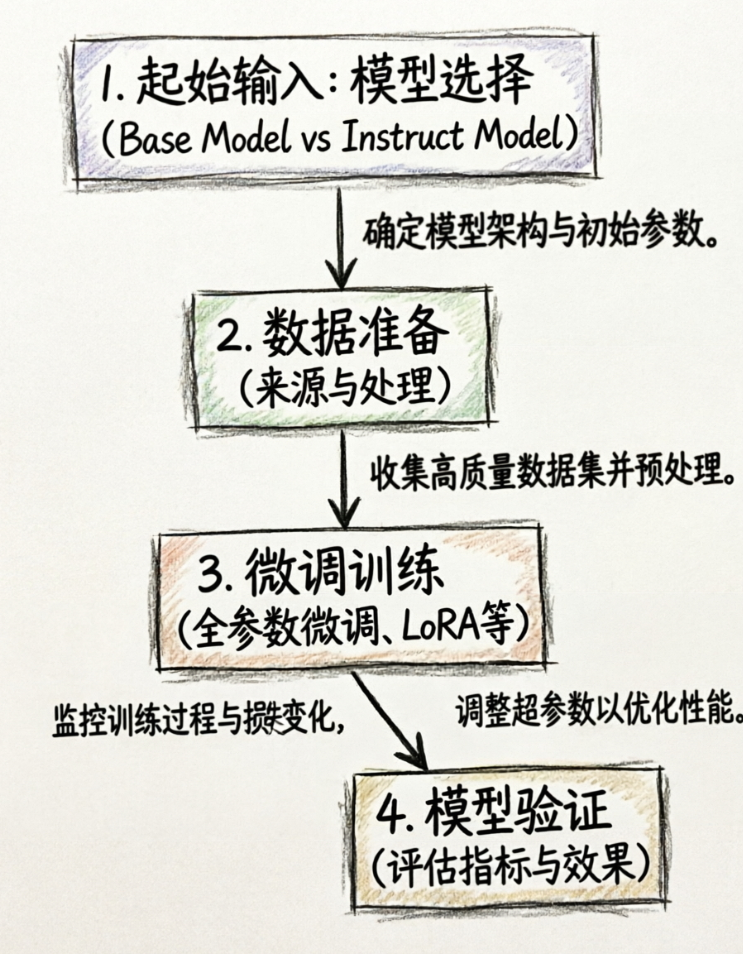
模型选择
在进行监督微调（SFT）时，模型选择主要考虑两个问题：选择 Base Model 还是 Instruct Model，以及选择多大规模的模型。
选型建议
对于绝大多数应用场景，通常建议优先选择 Instruct Model 作为微调起点：
- ✅ Instruct Model 已经在 Base Model 基础上经过指令微调、偏好对齐等后训练
- ✅ 具备较好的指令理解和对话能力
- ✅ 可以降低数据准备和训练难度
- ✅ 更适合客服问答、内容生成、结构化输出、多轮对话等常见任务
Base Model 则更适合高度定制化场景：
- 任务形式非常特殊
- 团队拥有大量高质量领域数据
- 希望从基础模型状态开始进行深度适配
模型规模选择：
参数量越大的模型通常能力越强，但显存占用、训练成本和推理成本也更高。因此模型并不是越大越好，应根据任务复杂度、硬件资源、响应速度和部署成本综合选择。
数据准备 ⭐⭐⭐
数据准备是微调流程中的基础环节，也是非常重要的一个环节，主要目标是根据任务需求构建高质量训练数据。
- 数据来源：公共数据源（Hugging Face Hub 、**ModelScope等）+ 私有数据源（企业内部文档、客户反馈、业务数据库等）
- 数据处理：原始数据通常需要经过筛选、清洗、结构化、标注和格式转换等处理，形成适合模型学习的训练样本
微调训练
训练阶段是模型真正根据任务数据进行调整的环节，流程和正常训练模型一致，但是由于大语言模型规模较大，训练阶段往往遇到显存占用高、训练速度慢、训练成本高等工程问题，因此需要根据硬件条件和任务需求，选择合适的训练方式和优化方案（如全参数微调、LoRA、QLoRA等）。
模型验证
在模型完成微调后，需要通过验证环节评估模型是否真正学到了目标任务能力。
- 验证维度：训练损失下降、验证集指标、样例推理结果、实际任务效果
- 评估重点：泛化能力、稳定性、可用性
- 价值：发现过拟合、指令跟随能力不足、回答质量不稳定等问题，为后续优化提供依据
微调数据准备
在微调大语言模型时，数据是决定模型性能与适用性的关键因素。模型表现很大程度上取决于其训练数据的质量。
数据来源
根据数据的来源与可访问性，通常可分为两大类：
公共数据源
公共数据集易于获取，通常是绝佳的起点，常用的数据共享平台：
Hugging Face Hub : 托管了数千个数据集，可以通过 datasets 库轻松访问，可根据任务类型、语言以及数据集许可证进行筛选。
ModelScope : 阿里巴巴旗下的模型开放平台，提供了一系列高质量的开源模型与数据集，覆盖多个领域，包括自然语言处理、计算机视觉和多模态任务。
私有数据源
私有数据源是指企业或组织内部拥有的数据集，这些数据可能受到版权保护或隐私限制，仅限于内部使用。
数据集格式
在大型语言模型的监督微调中，数据集的构建格式至关重要，常见格式可分为两类：指令式与对话式。
指令式格式
指令式数据集用于训练模型执行明确的单轮任务，如翻译、摘要或问答。其典型格式源自斯坦福大学的 Alpaca 项目，结构简洁、易于使用。
每条样本包含三个字段：
| 字段 | 说明 |
|---|---|
instruction |
描述模型需要执行的任务 |
input |
任务所需的上下文或附加信息 |
output |
模型应生成的正确回答 |
示例：
{
"instruction": "将以下英文翻译成中文",
"input": "Large language models are transforming AI.",
"output": "大语言模型正在改变人工智能。"
}
训练时，这些字段通常会通过提示模板组合成结构统一的输入字符串：
对话式格式
对话式数据集用于训练模型进行多轮对话，例如聊天机器人、虚拟助手等。目前广泛采用的格式主要有 ShareGPT 格式 和 OpenAI 格式。
ShareGPT 格式
ShareGPT 格式源于用户在社区中分享的与 ChatGPT 的真实对话记录，常用于保存多轮对话数据集。
每条数据样本由一个名为 conversations 的列表构成，列表中的每个元素代表一次发言，包含两个关键字段：
from：标识发言者的角色，通常为"human"（用户）或"gpt"（模型助手）value：该轮对话的具体文本内容
示例：
{
"conversations": [
{
"from": "human",
"value": "你能解释一下什么是机器学习吗？"
},
{
"from": "gpt",
"value": "机器学习是人工智能的一个分支，它允许计算机系统通过数据和经验自动改进其性能。"
},
{
"from": "human",
"value": "它主要有哪些类型？"
},
{
"from": "gpt",
"value": "主要类型包括监督学习、无监督学习、半监督学习和强化学习等。"
}
]
}
OpenAI 格式
OpenAI 格式是 OpenAI 官方在其 API 微调功能中推广的一种通用消息列表格式，兼具灵活性与表达力，可同时支持单轮和多轮对话。
每个训练样本是一个包含 messages 字段的字典，其中 messages 是一个有序列表，每条消息包含：
role：发言者角色，常见值：system、user、assistantcontent：消息的具体文本内容
示例：
{
"messages": [
{
"role": "system",
"content": "你是一名专业的营养师。你的回答应基于科学知识，提供务实、健康的建议，并避免提供任何医疗诊断。"
},
{
"role": "user",
"content": "我最近感觉下午很疲惫，有什么健康的零食推荐吗？"
},
{
"role": "assistant",
"content": "下午感到疲惫是常见的现象，选择正确的零食可以帮助稳定能量水平。以下是一些推荐：\n1. 一把坚果和干果：提供健康的脂肪、蛋白质和天然糖分，能快速补充能量。\n2. 希腊酸奶：富含蛋白质，能提供持久的饱腹感。\n3. 一个苹果或一根香蕉：富含维生素和膳食纤维，是方便的天然能量来源。\n请记得结合充足的水分摄入，因为脱水也会导致疲劳。"
}
]
}
Chat Template 标准化
在实际训练中，无论采用哪种原始格式，通常都会通过 Chat Template（例如 ChatML）将多轮消息组织成结构统一的字符串，确保模型能够正确解析对话结构并学习交互模式。
Chat Template
Chat Template（聊天模板） 是将结构化的多轮对话消息（如 OpenAI 格式的 messages 列表）转换为模型能理解的单一格式化字符串的转换规则。模型在训练和推理时看到的不是 JSON，而是经过 Chat Template 渲染后的文本。每个模型会有自己的 Chat Template，Qwen 系列的Chat Template将每条消息按以下模板组织：
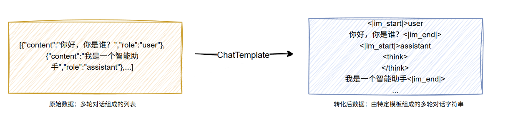
支持的 role 包括：system、user、assistant。
示例
将上述 OpenAI 格式的多轮对话通过 ChatML 渲染后，得到如下字符串：
<|im_start|>system
你是一名专业的营养师。你的回答应基于科学知识，提供务实、健康的建议，并避免提供任何医疗诊断。<|im_end|>
<|im_start|>user
我最近感觉下午很疲惫，有什么健康的零食推荐吗？<|im_end|>
<|im_start|>assistant
下午感到疲惫是常见的现象，选择正确的零食可以帮助稳定能量水平。以下是一些推荐：
1. 一把坚果和干果：提供健康的脂肪、蛋白质和天然糖分，能快速补充能量。
2. 希腊酸奶：富含蛋白质，能提供持久的饱腹感。
3. 一个苹果或一根香蕉：富含维生素和膳食纤维，是方便的天然能量来源。
请记得结合充足的水分摄入，因为脱水也会导致疲劳。<|im_end|>
得到上面的输入字符串，就可以进行分词、得到 input_ids，然后去训练模型了。
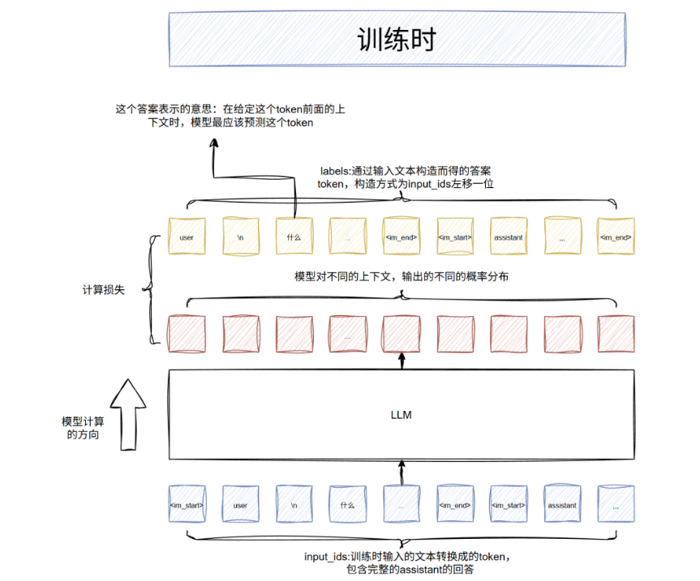
之后，再推理阶段，使用相同的 Chat Template 得到 input_ids，从 assistant 标签开始预测下一个 token 即可。此时，如果不开启 thinking 模式，那么在 assistant 后面，直接跟上 \
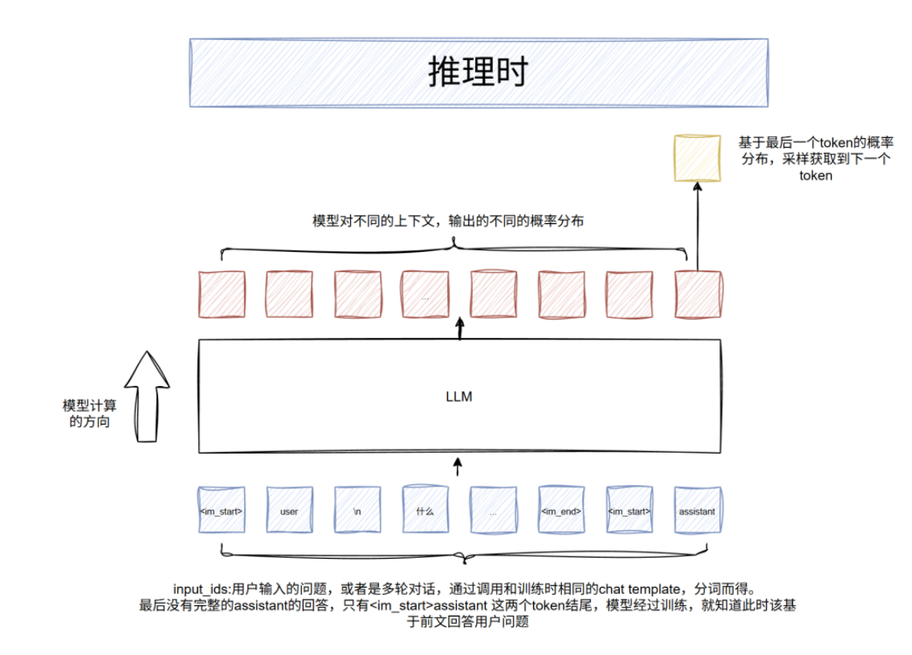
下面是 Hugging Face 提供的 apply_chat_template API 用法：
函数签名
tokenizer.apply_chat_template(
conversation: list[dict],
tokenize: bool = True,
add_generation_prompt: bool = False,
continue_final_message: bool = False,
**kwargs
) -> Union[str, list[int]]
参数说明
| 参数 | 类型 | 默认值 | 说明 |
|---|---|---|---|
conversation |
list[dict] |
必填 | 多轮对话列表，格式为 [{"role": ..., "content": ...}, ...] |
tokenize |
bool |
True |
是否返回 token IDs。True → 返回 list[int]；False → 返回格式化后的字符串 |
add_generation_prompt |
bool |
False |
是否在末尾追加 assistant 角色前缀，用于推理时让模型开始生成回复 |
continue_final_message |
bool |
False |
是否继续最后一条消息（用于补全场景） |
enable_thinking |
bool |
True |
（Qwen 等模型专用）是否启用思考过程标记 |
代码示例
# 1. 训练阶段：格式化对话，返回字符串
message_list = [
{'role': 'user', 'content': '你好'},
{'role': 'assistant', 'content': '你好，我是Qwen。'},
]
res = tokenizer.apply_chat_template(message_list, tokenize=False)
print(res)
# 输出: <|im_start|>user\n你好<|im_end|>\n<|im_start|>assistant\n你好，我是Qwen。<|im_end|>
# 2. 推理阶段：加上 generation_prompt，让模型继续生成
message_list2 = [
{'role': 'system', 'content': '你是一个翻译助手，实现幽默的中文 -> 英文翻译'},
{'role': 'user', 'content': '翻译：你好'},
]
res2 = tokenizer.apply_chat_template(
message_list2,
tokenize=False,
add_generation_prompt=True # 追加 assistant 前缀，模型从此处开始生成
)
print(res2)
# 输出: <|im_start|>system\n...<|im_end|>\n<|im_start|>user\n...<|im_end|>\n<|im_start|>assistant\n
# 3. 关闭思考模式（Qwen 等模型专用）
res3 = tokenizer.apply_chat_template(
message_list2,
tokenize=False,
add_generation_prompt=True,
enable_thinking=False # 不生成 <think> 标签对，直接输出回答
)
构造 Assistant Answer 掩码
在SFT阶段，我们希望模型能够基于用户的问题（或者历史多轮对话），进行回答，所以不应该对用户输入 prompt 部分的 token 计算损失，只能对 assistant 回答部分，计算损失。这是SFT和预训练过程中一个最本质的区别。
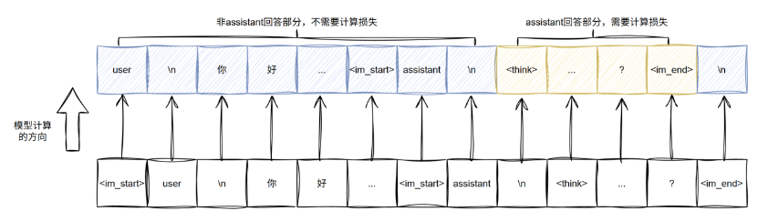
微调手写实现
SFT
本节以一个具体例子，讲解SFT的基本实现过程。该例子的具体目标为：将 Qwen3-0.6B-Base 模型，微调成一个遵循人类指令，能进行多轮对话的模型。
1. 数据与模型准备
# 先去下载 modelscope 依赖
uv add modelscope
# 下载数据集到本地
modelscope download --dataset HuggingFaceH4/ultrachat_200k --local_dir ./data/**ultrachat_200k**
# 下在模型到本地
modelscope download --model Qwen/Qwen3-0.6B-Base --local_dir ./model/Qwen3-0.6B-Base
2. 处理数据集
先加载本地的数据集，得到 dataset 对象（本质是一个列式存储）。
# 处理数据集
from datasets import load_dataset
def get_data():
# 如果是本地数据集，串本地路径就行
ds = load_dataset('../data/ultrachat_200k')
print(ds)
train_ds = ds['train_sft']
test_ds = ds['test_sft']
return train_ds, test_ds
train_ds, test_ds = get_data()
# 查看数据集有那些列（最合理的方式是看 hugging face 上的样子）
print(train_ds.column_names)
之后，要将每一条数据的 messages 通过模型特定的 chat_template 去转换成字符串，然后通过这个字符串就可以得到 input_ids、attention_mask
# 为了方便演示，只要 train_ds 的一部分数据
train_ds = train_ds.select(range(1000)) # select 得到的才是 dataset 对象⭐，不要直接切片，切片得到的是一个字典
# 对原始数据逐行运用 apply_chat_template
def apply_chat_template(batch):
# 如果 tokenize=True，则返回的是一个列表，列表中的每个元素是一个字典，字典的 key 是 input_ids, attention_mask
res = [
tokenizer.apply_chat_template(
msgs,
tokenize=True,
truncation=True,
max_length=2500
) for msgs in batch["messages"]
]
return {'input_ids':[r['input_ids'] for r in res], 'attention_mask':[r['attention_mask'] for r in res], }
# 注意，这里开了批处理，所以 apply_chat_template 接收的是一批数据，在写处理逻辑的时候注意
train_ds.map(apply_chat_template, batched=True)
这样，每行数据就会得到拼接后字符串对应的 input_ids 和 attention_mask，这里 attention_mask 全一，是因为我们没有填充token。
在 SFT 阶段，与预训练最大的不同就是计算损失的时候，不要计算用户输入的提示词对应的输出位置的损失，所以，我们需要对 answer 做一个掩码，让提示词对应部分的输出不计算损失！
3. SFT 的损失函数
监督微调模型的本质是：在给定的一个特定 prompt 作为输入的前提下，让模型输出的结果，更接近于训练数据的结果。
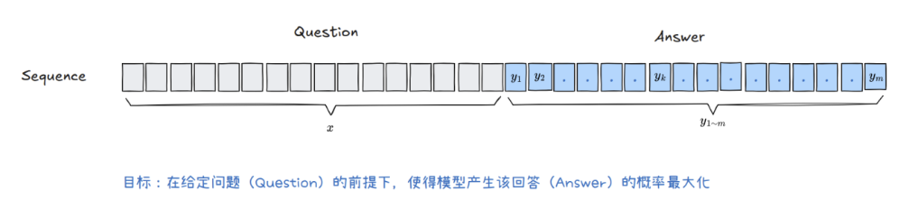
模型在给定特定问题的前提下，输出的回答的概率计算公式如下所示，SFT 的训练目标就是使得该概率最大化（也即最大似然估计思想）：
但是，一般多个数累乘的话，在真正实现中，会存在许多问题，所以，通过对数，把累乘问题转换为累加问题，同时，训练模型一般都是最小化一个损失函数，所以，给这个概念前再加上一个负号即可：
def compute_loss(output_logits, labels, assistant_answer_mask):
"""
计算当前批次的平均损失
:param output_logits:(batch_size, seq_len, vocab_size)
:param labels: (batch_size, seq_len)
:param assistant_answer_mask: (batch_size, seq_len)
:return: 损失值
"""
# 1. 计算概率分布 size = (batch_size, seq_len, vocab_size)
log_probs = torch.log_softmax(output_logits, dim=-1)
# 2. 从 log_probs 中取出每个答案对应的那个概率
# res.shape = (batch_size, seq_len, 1)
res = torch.gather(log_probs, dim=-1, index=labels.unsqueeze(-1))
# 3. 对数前加符号
res = res * -1
# 4. 计算损失
# res.size = (batch_size, 1)
res = res * (assistant_answer_mask.unsqueeze(-1))
loss = res.sum() / assistant_answer_mask.sum()
return loss
4. 微调训练
微调的训练过程和传统模型的训练也没什么区别！
首先，手写了一个 cosine decay 调度器，理解了 pytorch 官方实现的调度器是如何做到的，Cosine Decay（余弦退火）的核心思想，是利用余弦函数的数学特性，为模型训练提供一种“先慢、后快、再慢”的平滑学习率衰减曲线。
def cosine_decay(current_step, total_step, warmup_ratio, min_lr, max_lr):
"""带 warmup 的 cosine decay 学习率"""
warmup_steps = total_step * warmup_ratio
if current_step < warmup_steps:
return max_lr * current_step / max(warmup_steps, 1)
decay_steps = total_step - warmup_steps
progress = (current_step - warmup_steps) / max(decay_steps, 1)
cosine = (1.0 + math.cos(math.pi * progress)) / 2.0
return min_lr + (max_lr - min_lr) * cosine
训练过程如下：
def train(model, tokenizer, train_data, config: SFTConfig, args):
"""
train_data: 已经被 apply_chat_template 处理过的 Dataset（含 input_ids 列）
"""
if len(train_data) == 0:
raise ValueError("train_data 为空，请检查 --num_samples / --data_path")
# datasets.Dataset 切片返回的是子 Dataset，迭代行为不可靠；
# 提前转成 list[dict]，让 train_data[a:b] 返回 list of dict
if not isinstance(train_data, list):
train_data = list(train_data)
# Qwen3-Base 没有显式 pad_token，兜底用 eos
if tokenizer.pad_token is None:
tokenizer.pad_token = tokenizer.eos_token
model.to(config.device)
model.train()
optimizer = torch.optim.AdamW(model.parameters(), lr=config.max_lr)
# 缓存一次，避免每个 step 都重 encode e
os_token_id = tokenizer.convert_tokens_to_ids("<|im_end|>")
total_step = (len(train_data) + config.batch_size - 1) // config.batch_size
if args.max_steps > 0:
total_step = min(total_step, args.max_steps)
print(f"Total training steps: {total_step}")
loss_history: "deque[float]" = deque(maxlen=config.logging_step)
for step in range(total_step):
batch_data = train_data[
step * config.batch_size: (step + 1) * config.batch_size
]
if not batch_data:
continue
# 当前 step 的 lr（每 step 只算一次）
cur_lr = cosine_decay(
step, total_step, config.warmup_ratio, config.min_lr, config.max_lr
)
for pg in optimizer.param_groups:
pg["lr"] = cur_lr
# 1) padding：torch.stack 直接拼接等长 1D tensor
max_len = max(len(x["input_ids"]) for x in batch_data)
seqs = [
nn.functional.pad(
torch.tensor(data["input_ids"], dtype=torch.long),
(0, max_len - len(data["input_ids"])),
value=tokenizer.pad_token_id,
)
for data in batch_data
]
padded_seqs = torch.stack(seqs, dim=0).to(config.device)
# 2) input / labels
input_ids = padded_seqs[:, :-1]
labels = padded_seqs[:, 1:]
# 3) mask：padding 是 train loop 里手动 pad 的，apply_chat_template 返回的
# attention_mask 仍是全 1，不能复用，必须按 pad_token_id 重新算
assistant_answer_mask = create_answer_mask(input_ids, eos_token_id)
padding_mask = torch.where(input_ids == tokenizer.pad_token_id, 0, 1)
final_mask = padding_mask * assistant_answer_mask
if not final_mask.any():
print(f"step {step}: 当前 batch 没有 assistant 回复，跳过")
continue
# 4) forward
outputs: CausalLMOutputWithPast = model(input_ids)
output_logits = outputs.logits
# 5) loss
loss = compute_loss(output_logits, labels, final_mask)
# 懒 .item()：只在 log 窗口取一次值，避免每 step CUDA sync
loss_history.append(loss.detach())
if (step + 1) % config.logging_step == 0 or step + 1 == total_step:
avg_loss = sum(t.item() for t in loss_history) / len(loss_history)
print(
f"step: {step + 1}/{total_step}, loss: {avg_loss:.4f}, lr: {cur_lr:.2e}"
)
# 6) backward
loss.backward()
optimizer.step()
optimizer.zero_grad()
# 保存
model.save_pretrained(config.save_dir)
tokenizer.save_pretrained(config.save_dir)
print(f"模型已保存到 {config.save_dir}")
脚本入口：
# ============================================================
# 8. 入口
# ============================================================
def main():
args = parse_args()
print(f"Loading model from {args.model_path}")
model = AutoModelForCausalLM.from_pretrained(args.model_path)
tokenizer = AutoTokenizer.from_pretrained(args.model_path)
print(f"Model class: {type(model).__name__}")
# 加载并预处理数据
print("Loading & preprocessing dataset ...")
train_ds, _ = load_raw_data(args.data_path)
train_ds = train_ds.select(range(min(args.num_samples, len(train_ds))))
train_ds = train_ds.map(
lambda batch: apply_chat_template(batch, tokenizer, args.max_length),
batched=True,
remove_columns=["prompt", "prompt_id", "messages"],
# num_proc=min(4, os.cpu_count() or 1),
)
print(train_ds[0])
device = torch.device("cuda" if torch.cuda.is_available() else "cpu")
print(f"Using device: {device}")
config = SFTConfig(
device=device,
batch_size=args.batch_size,
warmup_ratio=args.warmup_ratio,
logging_step=args.logging_step,
save_dir=args.save_dir,
max_lr=args.max_lr,
min_lr=args.min_lr,
)
train(model, tokenizer, train_ds, config, args)
if __name__ == "__main__":
main()
5. 模型推理
模型推理分为两个阶段：prefill 和 decode，但是 transformer 提供了 generate 方法，非常简单就可以实现模型的推理：
res = model.generate(
input_ids=input_ids, # 输入 token ids: Tensor(batch_size, seq_len)
max_new_tokens=500, # 最多生成的新 token 数
do_sample=True, # 是否采样（False = 贪心解码）
temperature=0.9, # 控制随机性（>1 更随机，<1 更稳定）
top_p=0.9, # nucleus sampling（保留累计概率0.9的token）
eos_token_id=151645, # 结束符 token id
return_dict_in_generate=True, # ⭐返回结构化输出（关键）
output_scores=True, # ⭐返回每一步 logits
output_attentions=True, # 可选：返回注意力
output_hidden_states=True # 可选：返回隐藏状态
)
该方法的返回值默认是一个 torch.Tensor，维度为 [batch_size, seq_len]，其中 seq_len 包含了原始输入和模型的输出，如果设置参数 return_dict_in_generate 为 True，则返回一个字典。
# 类型
GenerateOutput (ModelOutput子类)
# 结构
{
sequences: Tensor,
# shape: (batch_size, seq_len)
# 内容：输入 + 生成后的完整 token 序列
scores: Tuple[Tensor],
# length = generated_steps
# 每一步：
# shape: (batch_size, vocab_size)
# 内容：每一步 logits / 概率分布
attentions: Optional,
# shape（典型）:
# (layers, batch_size, heads, seq_len, seq_len)
# 内容：attention 权重
hidden_states: Optional
# shape:
# (layers, batch_size, seq_len, hidden_size)
# 内容：每层隐藏表示
}
DPO
DPO（Direct Preference Optimization）出自 2023 年论文《Direct Preference Optimization: Your Language Model is Secretly a Reward Model》。它的思想是直接利用“优答优于差答”的偏好数据训练模型，无需单独训练奖励模型，也不用强化学习。相比 SFT 只学习标准答案，DPO更强调答案之间的相对偏好。
如下图所示，DPO 的核心思想可以概括为：让策略模型对更好的回复的相比概率，比更差回复更高。
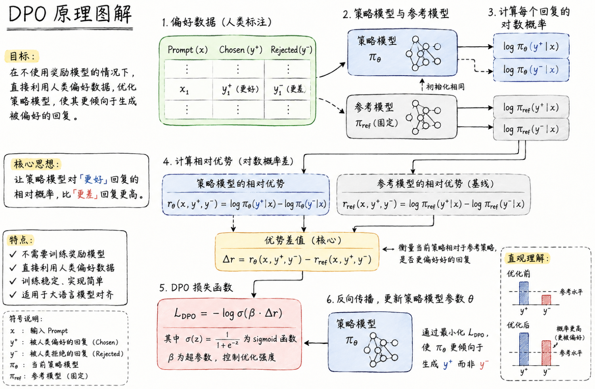
1. 数据与模型准备
DPO 的每条样本包含输入 Prompt，还有一对回答，分别为更加符合人类偏好的 chosen answer，另一个是相对较差的 rejected answer.
本案例选用：HuggingFaceH4/ultrafeedback_binarized数据集：
modelscope download --dataset HuggingFaceH4/ultrafeedback_binarized --local_dir ./data/ultrafeedback_binarized
2. 损失函数介绍与实现
DPO 的损失函数定义如下：
- \(π_\theta\) 是当前正在训练的策略模型。
- \(π_{ref}\) 是参考模型（通常是 SFT 后的初始模型，权重冻结）。
- \(y_w\) 是 chosen（优选/人类偏好的回答）。
- \(y_l\) 是 rejected（拒绝/人类不偏好的回答）。
- \(β\) 是控制偏离参考模型程度的温度参数，也可以叫做偏好强度
- \(σ\) 是 Sigmoid 函数。
def compute_loss(chosen_loss, reject_loss, reference_chosen_loss, reference_reject_loss):
"""
基于 DPO 的损失函数。（这里的概率都经过了log函数）
"""
# 定义优化强度β（初始值0.1）
beta = 0.1
r_theta = chosen_loss - reject_loss
r_ref = reference_chosen_loss - reference_reject_loss
r = r_theta - r_ref
loss = -torch.log_softmax(r, dim=-1)
return torch.mean(loss)
def compute_log_probs(output_logits, labels, assistant_answer_mask):
"""
计算 log
:param output_logits: batch_size, seq_len, vocab_size
:param labels: batch_size, seq_len
:param assistant_answer_mask: batch_size, seq_len
:return:
"""
# 1. log_probs batch_size, seq_len, vocal_size
log_probs = torch.log_softmax(output_logits, dim=-1)
# 2. gather batch_size, seq_len, 1
gathered = torch.gather(log_probs, dim=-1, index=labels.unsqueeze(-1))
answer_log_probs = gathered.squeeze(-1)
# 3. 得到每个样本的 -log_yi
answer_log_probs = answer_log_probs * -1
# 4. 把不需要计算损失的位置设置为0 batch_size, seq_len
masked_answer_log_probs = answer_log_probs * assistant_answer_mask
# 5. 计算每个样本的损失
return torch.sum(masked_answer_log_probs, dim=-1) / assistant_answer_mask.sum(dim=-1)
3. 训练流程
def train(tokenizer:PreTrainedTokenizerFast, config: DPOConfig, args):
# 1. 加载模型（策略模型和参考模型）
pai_model = AutoModelForCausalLM.from_pretrained(config.model_path, torch_dtype=torch.bfloat16)
ref_model = AutoModelForCausalLM.from_pretrained(config.model_path, torch_dtype=torch.bfloat16)
pai_model.to(config.device)
ref_model.to(config.device)
pai_model.train()
ref_model.eval()
# 开启 gradient checkpointing：不存中间激活，反向时重算，节省 ~3.6GB pai_model.gradient_checkpointing_enable()
# checkpointing + use_cache 会冲突，关掉
pai_model.config.use_cache = False
optimizer = torch.optim.AdamW(pai_model.parameters(), lr=config.max_lr)
# 缓存一次，避免每个 step 都重 encode eos_token_id = tokenizer.convert_tokens_to_ids("<|im_end|>")
# 2. 加载数据集
chosen_train_ds, reference_train_ds = get_train_data(config)
# 2.1 对数据集的 messages 进行 apply_chat_template，得到数据集[{"input_ids": []}, ] 每条样本只有input_ids
chosen_train_ds = chosen_train_ds.map(
lambda x: apply_chat_template(x, tokenizer, config.max_len),
batched=True,
batch_size=32,
remove_columns=['messages'],
load_from_cache_file=False,
)
reference_train_ds = reference_train_ds.map(
lambda x: apply_chat_template(x, tokenizer, config.max_len),
batched=True,
batch_size=32,
remove_columns=['messages'],
load_from_cache_file=False,
)
total_step = (len(chosen_train_ds) + config.batch_size - 1) // config.batch_size
if args.max_steps > 0:
total_step = min(total_step, args.max_steps)
print(f"Total training steps: {total_step}")
loss_history: "deque[float]" = deque(maxlen=config.logging_step)
for step in range(total_step):
# 分别构造批次数据
# 注意：数据集只剩一列时，ds[a:b] 切片迭代会返回列名字符串而不是 dict，
# 必须用 .select(range(...)) 才能正常返回 list[dict]（也不是，是因为我之前得到的 batch_rejected_data 不是 list，是个字典，所以在：rejected_max_ken = max(len(x["input_ids"]) for x in batch_rejected_data) 时候会有问题
a, b = step * config.batch_size, (step + 1) * config.batch_size
batch_chosen_data = list(chosen_train_ds.select(range(a, b)))
batch_rejected_data = list(reference_train_ds.select(range(a, b)))
if not batch_rejected_data or not batch_rejected_data:
continue
# 当前 step 的 lr（每 step 只算一次）
cur_lr = cosine_decay(
step, total_step, config.warmup_ratio, config.min_lr, config.max_lr
)
for pg in optimizer.param_groups:
pg["lr"] = cur_lr
# 1) 对 chosen, rejected 分别padding：torch.stack 直接拼接等长 1D tensor
batch_max_len = max(len(x["input_ids"]) for x in batch_chosen_data['messages'])
chosen_seqs = [
nn.functional.pad(
torch.tensor(data["input_ids"], dtype=torch.long),
(0, batch_max_len - len(data["input_ids"])),
value=tokenizer.pad_token_id,
)
for data in batch_chosen_data
]
chosen_padded_seqs = torch.stack(chosen_seqs, dim=0).to(config.device)
rejected_max_ken = max(len(x["input_ids"]) for x in batch_rejected_data)
rejected_seqs = [
nn.functional.pad(
torch.tensor(data["input_ids"], dtype=torch.long),
(0, rejected_max_ken - len(data["input_ids"])),
value=tokenizer.pad_token_id,
)
for data in batch_rejected_data
]
rejected_padded_seqs = torch.stack(rejected_seqs, dim=0).to(config.device)
# 2) 构造输入输出：input / labels
chosen_input_ids = chosen_padded_seqs[:, :-1]
chosen_labels = chosen_padded_seqs[:, 1:]
rejected_input_ids = rejected_padded_seqs[:, :-1]
rejected_labels = rejected_padded_seqs[:, 1:]
# 3) mask：padding 是 train loop 里手动 pad 的，apply_chat_template 返回的
# attention_mask 仍是全 1，不能复用，必须按 pad_token_id 重新算
chosen_assistant_answer_mask = create_answer_mask(chosen_input_ids, eos_token_id)
chosen_padding_mask = torch.where(chosen_input_ids == tokenizer.pad_token_id, 0, 1)
chosen_final_mask = chosen_padding_mask * chosen_assistant_answer_mask
rejected_assistant_answer_mask = create_answer_mask(rejected_input_ids, eos_token_id)
rejected_padding_mask = torch.where(rejected_input_ids == tokenizer.pad_token_id, 0, 1)
rejected_final_mask = rejected_padding_mask * rejected_assistant_answer_mask
if not chosen_final_mask.any() or not rejected_final_mask.any():
print(f"step {step}: 当前 batch 没有 assistant 回复，跳过")
continue
# 4) forward（bf16 autocast，省一半 logits/激活显存）
with torch.autocast(device_type=config.device.type, dtype=torch.bfloat16):
# 走四次前向传播
# 分别为策略模型（2次）
chosen_output_logits: torch.Tensor = pai_model(chosen_input_ids).logits
rejected_output_logits: torch.Tensor = pai_model(rejected_input_ids).logits
# 参考模型（2次）：不要跟踪梯度
with torch.no_grad():
ref_chosen_output_logits: torch.Tensor = ref_model(chosen_input_ids).logits
ref_rejected_output_logits: torch.Tensor = ref_model(rejected_input_ids).logits
# 计算参考模型、策略模型的对数概率
chosen_output_log = compute_log_probs(chosen_output_logits, chosen_labels, chosen_final_mask)
rejected_output_log = compute_log_probs(rejected_output_logits, rejected_labels, rejected_final_mask)
ref_chosen_output_log = compute_log_probs(ref_chosen_output_logits, chosen_labels, chosen_final_mask)
ref_rejected_output_log = compute_log_probs(ref_rejected_output_logits, rejected_labels, rejected_final_mask)
# 5) 计算策略模型和参考模型之间的 DPO loss
loss = compute_loss(chosen_output_log, rejected_output_log, ref_chosen_output_log, ref_rejected_output_log)
# 懒 .item()：只在 log 窗口取一次值，避免每 step CUDA sync loss_history.append(loss.detach())
if (step + 1) % config.logging_step == 0 or step + 1 == total_step:
avg_loss = sum(t.item() for t in loss_history) / len(loss_history)
print(
f"step: {step + 1}/{total_step}, loss: {avg_loss:.4f}, lr: {cur_lr:.2e}"
)
# 6) backward
loss.backward()
optimizer.step()
optimizer.zero_grad()
# 保存
pai_model.save_pretrained(config.save_dir)
tokenizer.save_pretrained(config.save_dir)
print(f"模型已保存到 {config.save_dir}")
微调中的工程问题
在整个微调过程中，往往会遇到资源占用高、训练速度慢等工程问题。其中，训练速度慢很多时候与显存和计算资源受限有关，例如无法使用更大的 batch size、无法提高并行度，或者不得不采用更保守的训练配置。本节主要介绍这些问题的具体解决方案。
显存消耗构成
再对 LLM 进行微调过程中，显存的消耗主要由以下五部分组成：模型参数、梯度、优化器状态、激活值状态以及其他运行时开销。
1. 模型参数
模型参数指网络中所有可训练权重（如注意力投影矩阵、前馈网络权重等）。在训练过程中，这些参数需常驻显存，用于前向传播与反向传播计算。参数所占显存与模型总参数量和存储精度直接相关。
其中：
- \(N_{\text{params}}\)：模型总参数数量（例如 7B = \(7 \times 10^9\)）
- \(B_{\text{param-dtype}}\)：每个参数所占字节数（FP16 为 2 字节，FP32 为 4 字节）
示例：7B 模型在 FP16 精度下，参数约占 \(7 \times 2 = 14\) GB 显存。
2. 梯度
在反向传播过程中，每个可训练参数都会计算对应的梯度。梯度张量的形状与参数一致，通常以与参数相同的精度存储，因此其显存占用通常与模型参数相当。
3. 优化器状态
现代优化器（如 AdamW）为每个可训练参数维护额外的状态变量（一阶矩 \(m\) 和二阶矩 \(v\)），通常以 FP32 精度存储。显存占用往往是模型参数的数倍，是微调中显存消耗的主要来源。
AdamW 计算公式回顾
AdamW 相比 Adam 多了 \(\eta \cdot \lambda \cdot \theta_t\) 权重衰减项（解耦后的 weight decay），因此需要额外存储两份状态 \(m, v\)。
示例：7B 模型使用 AdamW 优化器，优化器状态约占 \(2 \times 7 \times 4 = 56\) GB，远超参数本身（14 GB）。
这是为什么优化器状态成为主要显存瓶颈
在混合精度训练中，参数和梯度可以用 FP16 存储（约 14 GB + 14 GB），但 AdamW 的 \(m\) 和 \(v\) 必须以 FP32 存储以保证数值稳定性（约 56 GB）。这也正是各种显存优化技术（DeepSpeed ZeRO、FSDP、QLoRA）的主要优化对象。
4. 激活值
激活值是前向传播中各层输出的中间结果，需在反向传播时用于梯度计算。其显存占用与模型深度、隐藏层维度、输入序列长度、批次大小呈正相关。
其中：
- \(b\)：批次大小
- \(s\)：序列长度
- \(h\)：隐藏维度
- \(l\)：模型层数
- \(B_{\text{act-dtype}}\)：激活精度字节数（通常为 2，FP16）
- \(k\)：补偿因子（经验值，通常在 \(10 \sim 30\) 之间）
激活值难以精确预估
上述公式只是粗略估算，因为激活值还受到 网络结构（是否使用 GQA、MoE、是否使用 FlashAttention 等）和 梯度检查点（Gradient Checkpointing） 策略影响。
5. 其他运行时开销
包括但不限于：
- CUDA 内核临时内存：算子计算过程中的临时缓冲区
- 分布式训练通信缓冲区：NCCL 等通信库的临时分配
- 框架开销：PyTorch 自身的数据结构、CUDA 上下文等
- 分词器、DataLoader 等辅助资源
这部分通常占比相对较小，但在大规模分布式训练中不可忽视。
总显存估算示例（7B 模型，混合精度 + AdamW）
| 组成部分 | 公式 | 显存占用 |
|---|---|---|
| 模型参数 | \(7B \times 2\) | 14 GB |
| 梯度 | \(7B \times 2\) | 14 GB |
| 优化器状态 | \(2 \times 7B \times 4\) | 56 GB |
| 激活值 | 取决于 \(b, s, h, l\) | 不定 |
| 其他开销 | - | 2 ~ 5 GB |
| 合计（不含激活值） | - | 约 90 GB |
这也是为什么 7B 模型的完整微调（Full Fine-Tuning）通常需要 2~4 张 80GB 的 A100/H100 显卡——若想用更少显存微调，就需要借助 LoRA、QLoRA、ZeRO 等技术来分摊或压缩上述各项显存开销。
单GPU训练优化
梯度累计
核心：把大 batch 拆成多个 micro-batch 分别算梯度，累加后再更新参数。显存不变，等效 batch size 变大。
例：
batch_size=4, gradient_accumulation=3等价于单步batch_size=12
作用：在不增加显存的前提下，避免因 batch 过小导致更新不稳定。
CPU 卸载
核心：在非计算阶段，将激活值 / 优化器状态从 GPU 显存卸载到 CPU 内存，需要时再回传。
梯度检查点
核心：前向时只保存少量检查点；反向时需要某段中间激活，重新执行该段前向来恢复。是典型的时间换空间的概念。
混合精度训练
核心：使用 FP16/BF16 加速计算，保留 FP32 副本保证稳定性。
| 类型 | 构成 | 数值范围 | 硬件 |
|---|---|---|---|
| FP16 | 1 符号 + 5 指数 + 10 尾数 | 小，易溢出/下溢 | 所有 GPU |
| FP32 | 1 符号 + 8 指数 + 23 尾数 | 大 | 所有 GPU |
| BF16 | 1 符号 + 8 指数 + 7 尾数 | 几乎等同 FP32 | Ampere 及以上 |
在混合精度训练中，模型权重实际上维护了两份副本：
- 主权重 (Master Weights)：FP32 存储，用于参数更新，保证精度
- 工作权重 (Working Weights)：FP16/BF16 存储，用于前向/反向的矩阵乘法
多GPU训练与分布式优化
数据并行
数据并行（Data Parallelism）的核心思想是在多张 GPU 上各放置一份完整的模型副本，并让不同 GPU 并行处理不同的数据子集。这样做的主要目的，是提升训练吞吐量，从而加快整体训练速度。
整体流程如下图所示，大体可以概括为：
- 每个 GPU 独立处理本地数据子集，完成前向计算、反向传播并得到本地梯度。
- 跨 GPU 进行梯度汇总，将所有梯度进行平均，使每个 GPU 获得相同的全局梯度。
- 各 GPU 使用相同的全局梯度独立更新参数，从而保证所有模型副本继续保持一致。
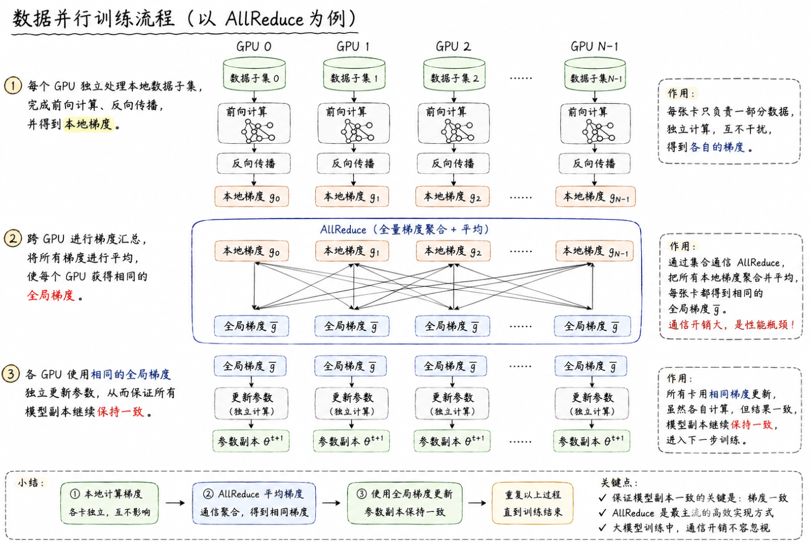
流水线并行
流水线并行的核心思想是将大语言模型按层纵向切分，把不同层分配到多个设备上，每个设备负责一个模型分段。其目标是降低单设备的显存占用，使超大规模模型能够在有限硬件资源下完成训练。
但是，流水线会存在 "气泡问题"，为了解决这个问题，可以引入微批次（Micro-batches） + 流水线调度策略：每个设备处理完一个微批次后立即切换到下一个，使各阶段紧密衔接、减少空闲时间。
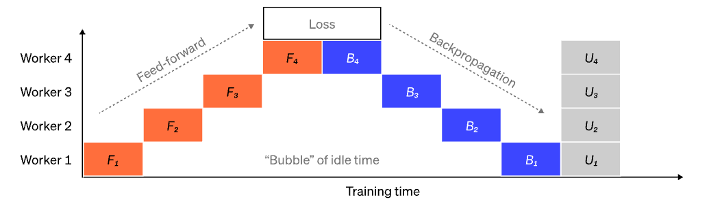
气泡问题
设备在等待上下游计算时处于空闲状态，造成计算资源浪费。
张量并行
张量并行的做法是将模型单层内部的张量计算拆分到多个设备上并行执行，每个设备仅持有部分权重和中间结果。其目标仍是突破单设备显存和计算能力的限制，使超大模型的单层也能在多设备上协同完成。
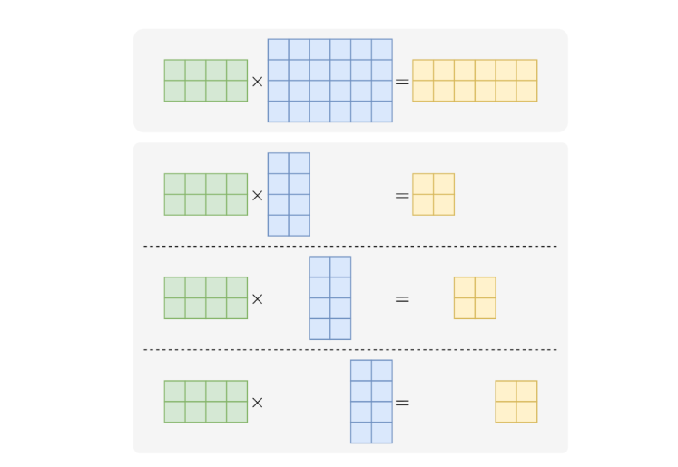
为什么切分有效？
矩阵乘法可分解为多个独立/可累加的点积，因此权重可以沿输出维度切分，激活广播到所有设备，各设备用本地分片权重独立计算。
专家并行
核心：将 MoE 模型中不同的 Expert 分配到不同设备，每个设备仅存储和计算部分专家。
天然适合并行化
每个 Expert 本质是独立的 FFN，无共享参数、无依赖关系，可直接切分到不同设备并行运行。
ZeRO
概述
ZeRO（Zero Redundancy Optimizer）是微软提出的对数据并行的深度增强。在标准数据并行中，每个设备都保存完整的模型状态，导致跨设备的冗余存储，并严重限制了可训练模型的规模。
ZeRO 的核心思想是：分片存储、按需加载。它不再让每块 GPU 都完整保存一整套模型状态，而是将模型状态切分成多个分片，分布式地存储在不同的 GPU 上；在执行某一层的前向或反向传播时，再通过高效的集体通信，按需、临时地从其他设备拉取当前计算所需的分片参数，并在用完后立即释放。
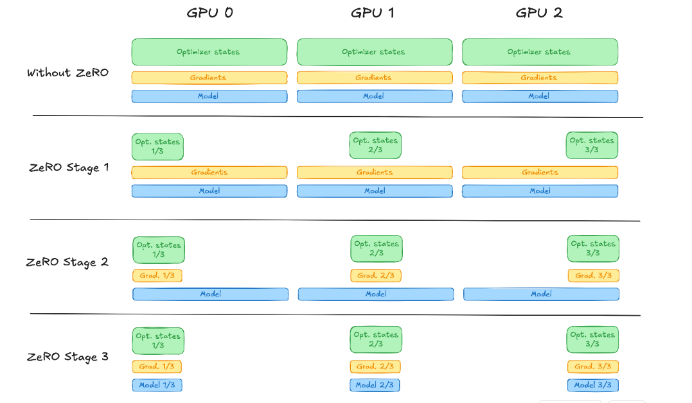
分片策略
ZeRO 将模型状态分片划分为三个递进阶段：
| 阶段 | 分片内容 | 显存节省 | 通信开销 |
|---|---|---|---|
| ZeRO-1 | 优化器状态 | 小 | 低 |
| ZeRO-2 | 优化器状态 + 梯度 | 中 | 中 |
| ZeRO-3 | 优化器状态 + 梯度 + 模型参数 | 大 | 高 |
选择策略
阶段越高 → 单卡显存占用越低，但通信成本上升。需在显存节省与通信开销之间权衡。
实现细节
具体实现可参考 DeepSpeed 官方博客。
参数高效微调 ⭐⭐⭐
参数高效微调（Parameter-Efficient Fine-tuning, PEFT）是一系列微调方法，其核心思想是仅更新少量参数或引入少量可训练模块，在显著降低资源消耗的同时，高效适配目标任务。目前，最先进的PEFT方法已经能实现与全参微调相当的性能。
Lora
LoRA 由微软研究院于 2021 年提出，因其训练成本低、适配能力强、推理无额外开销等优势，已成为当前大语言模型监督微调（SFT）中最广泛使用的技术。
Lora 原理
在传统的全参数微调中，模型中的某个参数矩阵 \(W_0 \in \mathbb{R}^{d \times k}\) 会在训练过程中被更新为：
LoRA 观察到：\(\Delta W\) 往往具有低秩结构，也就是说它的有效自由度远低于其表面维度。基于这一关键现象，LoRA 将 \(\Delta W\) 近似分解为两个低秩矩阵的乘积：
其中 \(r \ll \min(d, k)\)，通常取 4、8 或 16 等远小于原始维度的数值。
这样，微调后的权重矩阵可写为：
在训练过程中，LoRA 完全冻结原始权重 \(W_0\)，仅对新增的低秩矩阵 \(A\) 和 \(B\) 进行优化。这大幅减少了需要更新的参数量，同时也避免了对大规模模型权重的直接修改，使微调过程更加轻量、高效。
在推理阶段，低秩增量 \(AB\) 可以无缝合并回原始权重 \(W_0\) 中，不会引入额外的计算复杂度，因此 LoRA 的高效性不仅体现在训练中，也体现在推理过程中。
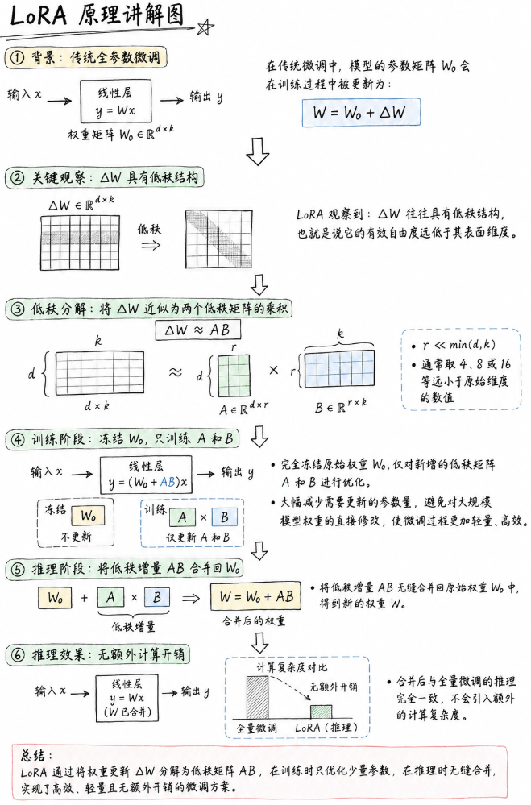
参数压缩示例：
对 \(d = k = 4096\) 的权重矩阵：
- 全参数更新需要约 16M 个参数
- 采用 LoRA（\(r = 8\)）时，仅需：\(4096 \times 8 + 8 \times 4096 = 65,536\) 个参数
- 仅占原始权重的约 0.4%
Lora 插入位置
LoRA 通常插入模型中的线性层。在主流 Decoder-only 模型中，最常用的是对注意力层的 q_proj 和 v_proj 插入 LoRA，原因如下：
- Query 和 Value 对任务语义最敏感；
- 仅插这两处即可接近全参微调性能；
- 参数和显存开销最小。
Lora 工程问题
在工程中实现中，通常会额外加入两个关键组件：
- 为了控制 LoRA 增量在训练初期的影响力，并在不同秩 \(r\) 下保持数值稳定性，通常会在增量上加入缩放系数，使前向计算变为：
- LoRA Dropout：为提升泛化能力，减轻小数据集上的过拟合，通常会对LoRA Layer的输入进行dropout
QLora
QLoRA（Quantized Low-Rank Adaptation）是 LoRA 的量化增强版本，由华盛顿大学和微软研究院于 2023 年提出。QLoRA 在 LoRA 的基础上引入 4-bit 量化技术，在几乎不损失性能的前提下，将大语言模型微调的硬件门槛大幅降低，使得数十亿参数级别的模型可在单张消费级 GPU（如 RTX 3090/4090）上完成高效微调。
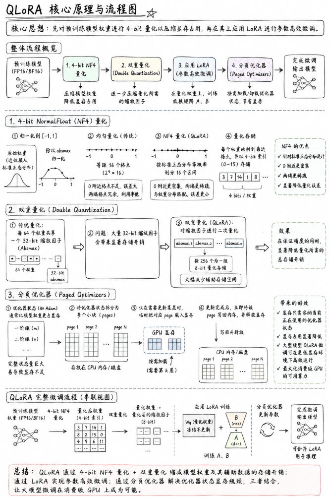
下面，分别介绍 QLora 的核心技术：
（1）4-bit NormalFloat（NF4）量化 ：量化是一种同通过降低数值精度来压缩模型、节省显存的技术，具体的量化流程如下图所示：
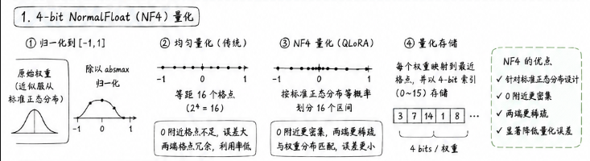
（2）双重量化（Double Quantization）：在权重量化过程中，为了保证精度，通常的做法是让每 64 个权重共享一个 32-bit 的缩放因子（Absmax）。虽然这种方法能有效控制量化误差，但这些大量的缩放因子自身也会带来显著的存储开销。
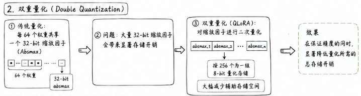
（3）分页优化器（Paged Optimizers）：在微调过程中，优化器状态（如 Adam 的一阶矩、二阶矩）往往比模型权重本身更占显存。即使使用 LoRA 或 QLoRA，大量优化器状态仍可能导致显存不足，尤其是在消费级 GPU 上。为解决这一瓶颈，QLoRA 使用了 分页优化器（Paged Optimizer） 技术，使优化器状态能够按需加载、按需卸载，从而更加高效地利用显存。
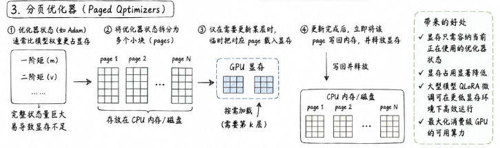
基于库的微调实现 ⭐⭐⭐
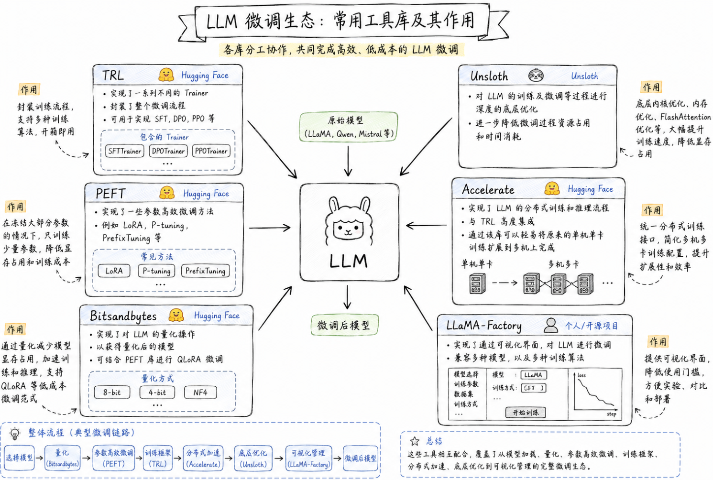
TRL
TRL 概述
从整个 Hugging Face 微调生态来看，TRL（Transformers Reinforcement Learning） 可以理解为：
一个专门用于 LLM 对齐（Alignment）和微调（Fine-tuning）的 Trainer 库。
它最大的价值不是提供模型，而是提供各种训练算法对应的 Trainer，把 SFT、DPO、PPO、GRPO 等训练流程封装起来，让开发者可以用统一的方式完成不同类型的微调。
TRL 数据格式的要求
具体可参考官方文档：TRL下的数据格式，其中，数据格式主要分为两个方面，分别为 format 和 Type，前者描述的是数据的结构方式，通常分为 standard 和 conversational 。后者与其设计用途相关，例如 prompt-only 或者 preference。至于某个 Trainer 改使用什么格式的数据集，可以参考 which-dataset-type-to-use
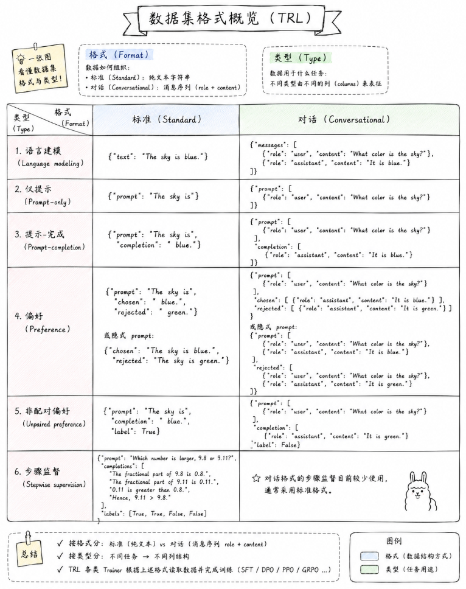
TRL 使用方式
首先，本章节先介绍一些重要的对象、api，然后给出一个通过 TRL 对模型进行微调的代码实操。
先介绍 SFTConfig 配置对象（它的参数），然后是 SFTTrainer，最后是完整的训练流程。
SFTConfig
SFTConfig 继承自 transformers.TrainingArguments，在它之上扩展了 SFT 场景特有字段。完整字段可参考 TRL 官方文档：SFTTrainer 与 TrainingArguments。
核心公式
- 有效 batch size：
EBS = per_device_train_batch_size × gradient_accumulation_steps × world_size - max_steps 推导：
max_steps = ⌈len(train_dataset) × num_train_epochs / EBS⌉
训练规模相关
SFTConfig(
num_train_epochs: float = 3.0, # 训练总轮数
per_device_train_batch_size: int = 8, # 单卡单步样本数
gradient_accumulation_steps: int = 1, # 梯度累积步数
max_steps: int = -1, # 最大优化步数；-1 表示由 epoch 决定
)
训练可视化相关
SFTConfig(
logging_strategy: str = "steps", # "no" | "epoch" | "steps"
logging_steps: int = 500, # 间隔多少步打一次日志
report_to: str = "none", # "none" | "tensorboard" | "wandb" | "all"
logging_dir: str = None, # tensorboard 日志输出目录
)
学习率相关
SFTConfig(
learning_rate: float = 5e-5, # 全参 1e-5~5e-5，LoRA 1e-4~3e-4
lr_scheduler_type: str = "linear", # "cosine" | "linear" | "constant_with_warmup" | ...
warmup_ratio: float = 0.0, # 预热步数占比，常用 0.03~0.1
)
学习率与 EBS 的关系：线性缩放法则
lr ∝ EBS。batch size 扩大 k 倍，learning rate 也应同比增加 k 倍；LoRA / QLoRA 经验上打 8 折。
优化器策略相关：默认 adamw_torch（PyTorch 版 AdamW）。
SFTConfig(
optim: str = "adamw_torch", # "adamw_torch" | "adamw_8bit" | "sgd" | ...
weight_decay: float = 0.0,
adam_beta1: float = 0.9,
adam_beta2: float = 0.999,
adam_epsilon: float = 1e-8,
)
评估与保存相关
SFTConfig(
output_dir: str, # 必填，checkpoint 与日志输出目录
eval_strategy: str = "no", # "no" | "epoch" | "steps"
eval_steps: int = 500, # 间隔多少步评估一次
save_strategy: str = "steps", # "no" | "epoch" | "steps"
save_steps: int = 500, # 间隔多少步保存一次
save_total_limit: int = 2, # 最多保留几个 checkpoint
metric_for_best_model: str = "loss", # 用于挑最优的指标名
greater_is_better: bool = False, # 上面那个指标越大越好还是越小越好
load_best_model_at_end: bool = False, # 训练结束是否加载最优 checkpoint
)
eval_strategy 与 save_strategy 要保持一致
否则 load_best_model_at_end 可能会因找不到匹配指标而报错。
优化相关
SFTConfig(
bf16: bool = False, # bfloat16 混合精度（推荐 Ampere+ 开启）
gradient_checkpointing: bool = False, # 梯度检查点，用时间换显存
max_length: int = 1024, # 单条样本最大 token 数（超出会截断）
use_liger_kernel: bool = False, # [Liger-Kernel](https://github.com/linkedin/Liger-Kernel) 加速
model_init_kwargs: dict = None, # 透传给 from_pretrained 的额外参数
# model_init_kwargs={"torch_dtype": torch.bfloat16, "attn_implementation": "flash_attention_2"}
)
特别的，对于参数：gradient_checkpointing，后面提到的 PEFT、Unsloth 都可以去配置，所以给出此图来讲清楚它们的关联：
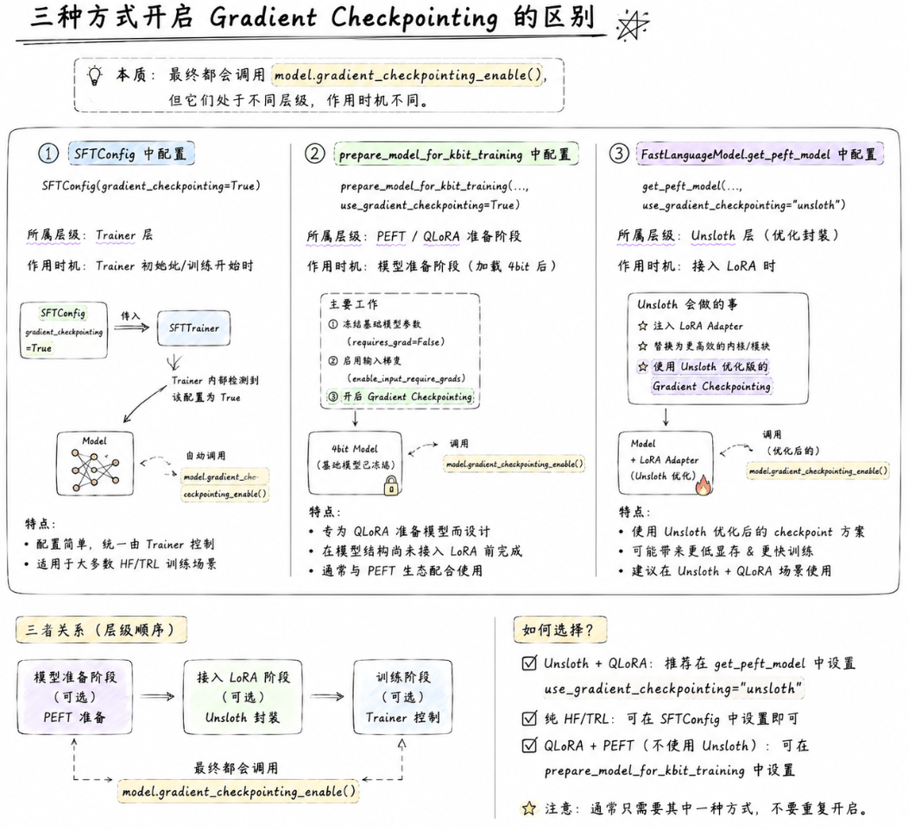
OOM 排查顺序
- 减小
per_device_train_batch_size（8 → 4 → 2 → 1） - 开启
gradient_checkpointing=True - 开启
bf16=True或加载 Liger-Kernel
其他 SFT 专用参数
SFTConfig(
assistant_only_loss: bool = False, # 只计算 assistant 回复部分的损失
chat_template_path: str = None, # 自定义 chat template 的 jinja 文件路径
)
assistant_only_loss：SFT 训练中最重要的一个开关
默认会对整条输入（system + user + assistant）都算 loss，模型会"作弊"背诵固定 prompt。开启后只对 assistant 部分算 loss，能避免 loss 虚低、与推理目标对齐。在 trl 0.20.0+ 中是首选写法，取代了旧版 DataCollatorForCompletionOnlyLM。
关于 SFT 中"怎么算 Loss"的原理细节，可以回看前面
### 2. SFT 的损失函数一节；关于 chat template 的设计与不计算输入 token 损失的图解，回看### 3. Chat Template 与 SFT。
SFTTrainer
SFTTrainer 继承自 transformers.Trainer，在它的基础上接管了 SFT 场景的数据打包、模板应用、损失计算等流程。详细字段可参考 TRL 官方文档：SFTTrainer。
SFTTrainer(
model: str | PreTrainedModel, # 模型路径或已加载的模型对象
args: SFTConfig = None, # 训练配置，对应 SFTConfig
train_dataset: Dataset = None, # 训练集
eval_dataset: Dataset | dict = None, # 验证集；没有就传 None
processing_class: PreTrainedTokenizer = None, # tokenizer（旧版字段为 tokenizer）
data_collator: DataCollator = None, # 自定义 collator；不传则按 packing/assistant_only_loss 自动构造
peft_config: PeftConfig = None, # 传 LoRA/QLoRA 配置时启用参数高效微调
)
全参微调：
from trl import SFTConfig, SFTTrainer
trainer = SFTTrainer(
model="Qwen/Qwen2.5-7B",
args=SFTConfig(output_dir="./sft", num_train_epochs=3),
train_dataset=train_ds,
processing_class=tokenizer,
)
trainer.train()
LoRA 微调：
from peft import LoraConfig
from trl import SFTConfig, SFTTrainer
trainer = SFTTrainer(
model="Qwen/Qwen2.5-7B",
args=SFTConfig(output_dir="./sft-lora", num_train_epochs=3),
train_dataset=train_ds,
processing_class=tokenizer,
peft_config=LoraConfig(r=16, lora_alpha=32, target_modules="all-linear"),
)
trainer.train()
常用 API：
# 启动 / 恢复训练
trainer.train(resume_from_checkpoint: str | bool = None) # 传 checkpoint 路径可断点续训
# 评估与预测
trainer.evaluate(eval_dataset: Dataset = None, ignore_keys: list = None, metric_key_prefix: str = "eval") -> dict
trainer.predict(test_dataset: Dataset, ignore_keys: list = None, metric_key_prefix: str = "test") -> PredictionOutput
# 保存与发布
trainer.save_model(output_dir: str = None) # 不传则保存到 args.output_dir
trainer.save_state(output_dir: str = None) # 保存优化器、scheduler、scaler 等状态
trainer.push_to_hub(commit_message: str = "End of training", blocking: bool = True) # 推到 HuggingFace Hub
# 日志
trainer.log(metrics: dict, step: int = None) # 写入日志（控制台 + report_to 后端）
# 内部 hook（一般重写以注入自定义优化器 / scheduler）
trainer.create_optimizer() -> torch.optim.Optimizer
trainer.create_scheduler(num_training_steps: int, optimizer: torch.optim.Optimizer = None) -> LambdaLR
典型调用顺序
TRL 实践
from datasets import load_dataset, Dataset
from transformers import AutoModelForCausalLM, AutoTokenizer
from trl.trainer.sft_trainer import SFTConfig, SFTTrainer
# 1. 加载模型和tokenizer
model = AutoModelForCausalLM.from_pretrained('Qwen/Qwen3-0.6B')
tokenizer = AutoTokenizer.from_pretrained('Qwen/Qwen3-0.6B')
# 2. 加载数据集
ds = load_dataset(
'json',
data_files={
'train': 'data/keywords_data_train.jsonl',
'test': 'data/keywords_data_test.jsonl'
}
)
train_ds, test_ds = ds['train'], ds['test']
print(train_ds.info)
def convert_data(batch:dict):
# 遍历每一个数据
temp = [] # 对这批处理完后，返回的是一个字典{messages:[{messages:[]},{}, {}]}
# print(f'{batch=}')
for conversation in batch['conversation']:
messages = []
for turn in conversation:
messages.append({
'role': 'user',
'content': turn['human']
})
messages.append({
'role': 'assistant',
'content': turn['assistant']
})
temp.append(messages)
return {'messages': temp}
train_ds = train_ds.map(convert_data, batched=True, remove_columns=train_ds.column_names)
test_ds = test_ds.map(convert_data, batched=True, remove_columns=test_ds.column_names)
# 3. 构造 sft 配置对象
config = SFTConfig(
# 训练规模相关
num_train_epochs=3,
per_device_train_batch_size=12,
gradient_accumulation_steps=1,
max_steps=-1,
# 训练可视化相关
logging_strategy='steps',
logging_steps=10,
report_to='tensorboard',
# 训练优化相关
bf16=True,
gradient_checkpointing=True,
max_length=1500,
# activation_offloading=
# 模型保存和评估相关
save_strategy='steps',
save_steps=100,
output_dir='./model/QWen3-0.6B-TRF',
eval_strategy='steps',
eval_steps=100,
metric_for_best_model='eval_loss',
greater_is_better=False,
load_best_model_at_end=True,
# 学习率相关
learning_rate=1e-5,
lr_scheduler_type='cosine',
# 对话式模型特有的，也就是不去计算用户输入，系统提示词对应输出的损失
assistant_only_loss=True,
# 使用其他 chat_template
# chat_template_path = '' #传一个本地路径就行
)
trainer = SFTTrainer(
model=model,
processing_class=tokenizer,
args=config,
train_dataset=train_ds,
eval_dataset=test_ds,
)
print(trainer.model)
trainer.train()
trainer.save_model(output_dir='model/QWen3-0.6B-TRF') %%
PEFT
PEFT 概述
PEFT 是 Hugging Face 官方维护的参数高效微调库。它用于在不完整微调整个大模型参数的情况下，仅训练少量新增参数，从而降低显存、计算和存储成本。PEFT 与 Transformers、Accelerate 等库集成，提供了更便捷的方式来加载、训练大型模型，并将其用于推理。
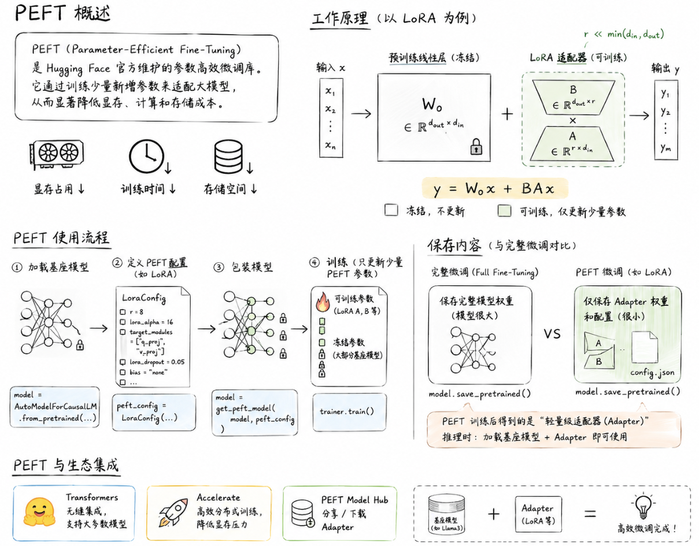
PEFT 使用方法
在使用 PEFT 时，通常会先定义一个 PeftConfig，例如 LoraConfig，然后通过 get_peft_model(model, peft_config) 将原始模型包装为 PeftModel。与原始模型相比，PeftModel 的主要变化包括：
- 冻结基座模型的大部分或全部参数，避免完整微调整个模型
- 根据配置添加可训练的 PEFT 参数，例如 LoRA 会在指定线性层中引入低秩矩阵 A、B；
- 调用 model.save_pretrained() 时，默认主要保存 adapter 权重和配置文件，而不是保存完整的基座模型权重。
具体使用方式可以参考peft_integration，总的来说，有三种方式去使用 PEFT，分别为：
1、 Using CLI Flags (Simplest)：启用 PEFT 最简单的方法是在命令行界面中使用 --use_peft 标志。这种方法非常适合快速实验和标准配置
python trl/scripts/sft.py \
--model_name_or_path Qwen/Qwen2-0.5B \
--dataset_name trl-lib/Capybara \
--use_peft \
--lora_r 32 \
--lora_alpha 16 \
--lora_dropout 0.05 \
--output_dir Qwen2-0.5B-SFT-LoRA
2、Passing peft_config to Trainer (Recommended)：为了获得更精细的控制，可以直接将 PEFT 配置传递给训练器。这是大多数使用场景的推荐方法
peft_config = LoraConfig(
r=32,
lora_alpha=16,
lora_dropout=0.05,
bias="none",
task_type="CAUSAL_LM",
target_modules=["q_proj", "v_proj", "k_proj", "o_proj"],
)
trainer = SFTTrainer(
model=model,
args=training_args,
train_dataset=dataset,
peft_config=peft_config, # Pass config here
)
3、Applying PEFT to Model Directly (Advanced)：为了获得最大的灵活性，您可以在将模型传递给训练器之前，先对模型应用 PEFT
from peft import LoraConfig, get_peft_model
from transformers import AutoModelForCausalLM
from trl import SFTConfig, SFTTrainer
# Load base model
model = AutoModelForCausalLM.from_pretrained("Qwen/Qwen2-0.5B")
# Apply PEFT configuration
peft_config = LoraConfig(
r=32,
lora_alpha=16,
lora_dropout=0.05,
bias="none",
task_type="CAUSAL_LM",
)
model = get_peft_model(model, peft_config)
# Pass PEFT-wrapped model to trainer
trainer = SFTTrainer(
model=model, # Already has PEFT applied
args=training_args,
train_dataset=dataset,
# Note: no peft_config needed here
)
PEFT 学习率选择
使用 LoRa 或其他 PEFT 方法时，通常需要使用比完全微调更高的学习率 （大约 10 倍）。这是因为 PEFT 方法只训练一小部分参数，因此需要更大的学习率才能实现类似的参数更新。
具体选择可参考：learning-rate-considerations
PEFT 模型的保存与加载
保存模型与全参微调一致，只不过此时只保存适配器的权重，而不是完整的模型
# Save the adapters
trainer.save_model("path/to/adapters")
# Or manually
model.save_pretrained("path/to/adapters")
加载模型是有区别的，我们需要先加载这个被微调的模型，然后再去通过 PEFT 提供的方法 PeftModel.from_pretrained 去加载适配器权重，至于适配器权重是否要更新到当前模型，这是可选的，不更新，无非就是推理的时候多一步运算。
from transformers import AutoModelForCausalLM
from peft import PeftModel
# Load base model
base_model = AutoModelForCausalLM.from_pretrained("Qwen/Qwen2-0.5B")
# Load PEFT adapters
model = PeftModel.from_pretrained(base_model, "path/to/adapters")
# Optionally merge adapters into base model for faster inference
model = model.merge_and_unload()
Bitsandbytes
Bitandbytes 概述
bitsandbytes 通过 k 位量化技术为 PyTorch 提供了易于访问的大型语言模型。bitsandbytes 提供了三个主要特性，可显著降低推理和训练的内存消耗：
- 8 位优化器采用分块量化技术，以极小的内存成本保持 32 位性能。
- LLM.int8() 或 8 位量化方法仅需一半的内存即可实现大型语言模型推理，且性能丝毫不减。该方法基于向量级量化，将大多数特征量化为 8 位，并使用 16 位矩阵乘法单独处理异常值。
- QLoRA 或 4 位量化技术能够利用多种节省内存的技术进行大型语言模型训练，且不会影响性能。该方法将模型量化为 4 位，并插入一小组可训练的低秩自适应 (LoRA) 权重以进行训练。
Bitsandbytes 使用方法
这部分目前主要介绍如何 Bitsandbytes 如何集成到 PEFT、TRL 中，实现 Qlora，但是 Bitsandbytes 的单独使用，暂不介绍，可以参考：bitsandbytes
bitsandbytes 在去与 PEFT 集成，实现 QLORA，通常做如下几步：
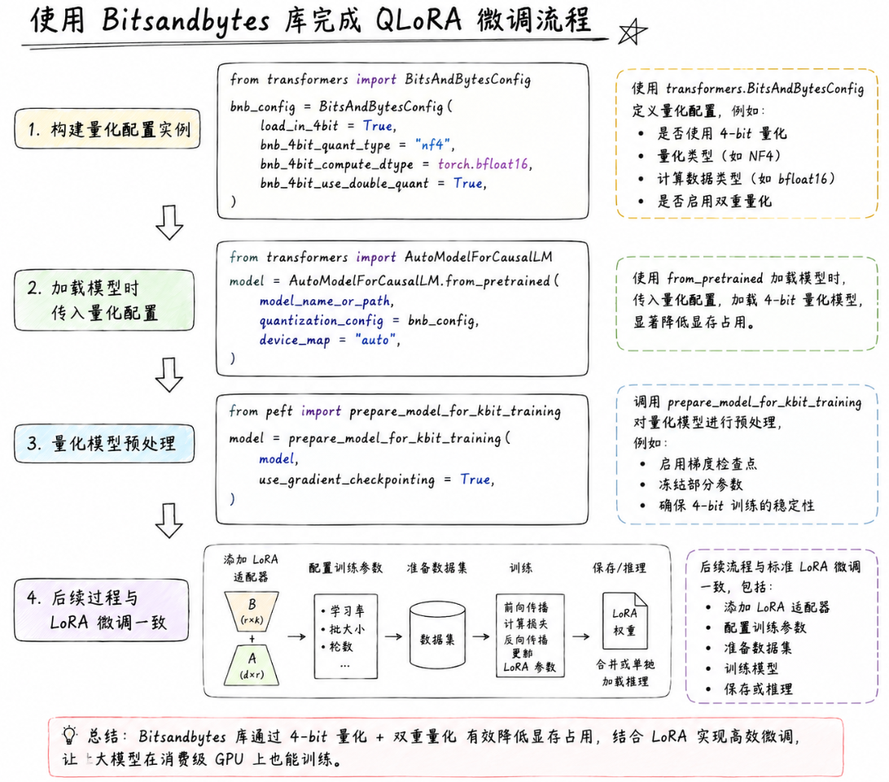
1、构建量化配置示例
bnb_config = BitsAndBytesConfig(
load_in_4bit=True, # 启用 4bit 训练
bnb_4bit_use_double_quant=True, # 启用双重量化
bnb_4bit_quant_type='nf4', # 量化类型
bnb_4bit_compute_dtype=torch.bfloat16 # 计算数据类型
)
2、加载模型时，传入量化对象
model = AutoModelForCausalLM.from_pretrained(
'Qwen/Qwen3-0.6B',
quantization_config=bnb_config # 传入量化配置对象
)
3、量化模型预处理
from peft import prepare_model_for_kbit_training
model = prepare_model_for_kbit_training(
model,
# 注意⭐⭐：在Qlora中，配置是否启用gradient_checkpointing 不是在 xxxConfig，而是在这里
use_gradient_checkpointing=True
)
4、 后续过程与 Lora 一致了，创建 LoraConfig，然后使用 get_peft_model 创建模型，然后创建 Trainer
lora_config = LoraConfig(
r=16,
lora_alpha=32,
lora_dropout=0.05,
target_modules=['q_proj', 'k_proj', 'v_proj', 'o_proj', 'gate_proj', 'down_proj', 'up_proj'],
task_type='CAUSAL_LM'
)
peft_model = get_peft_model(model, lora_config)
Unsloth
Unsloth 概述
Unsloth 是一个面向本地硬件的开源大模型训练与运行框架，主打更快训练、显存占用更低，同时保持对 Hugging Face 工作流的兼容；它不仅能做微调，还覆盖推理、评测和部署。

Unsloth 安装与导入
pip 安装
uv 安装
其实这部分我重点想讲述的是 unsloth 的导入，因为 unsloth 不仅对 pytorch 做了优化，还要对 transformer、trl、peft 等库去做优化，所以，unsloth 要在这些库之前导入，但是 windows 不支持 triton 库，所以下面代码会报错，可以跑到 windows 下的 wsl。
from unsloth import FastLanguageModel
from trl.trainer.sft_trainer import SFTTrainer, SFTConfig
from transformers import AutoModelForCausalLM, AutoTokenizer, BitsAndBytesConfig
from peft import get_peft_model, LoraConfig
Unsloth 的使用
Unsloth 有两种使用方式，要么通过图形化，要么通过 Unsloth Core，也就是代码，如下图，这里重点介绍第二种方式，具体可参考：unsloth_integration
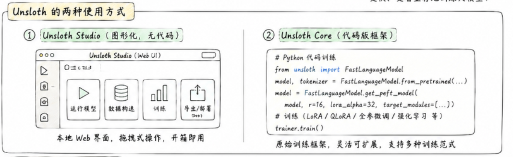
首先，通过 FastLanguageModel.from_pretrained 方法，来加载 model 和 tokenizer：
model, tokenizer = FastLanguageModel.from_pretrained(
model_name='Qwen3.0xxx', # 这里写模型名称，可以是本地，也可以是模型仓库名称
load_in_4bit=True, # 启用 4bit 训练
# 如果加载的是本地模型，要配合下面的参数
use_exact_model_name=True,
local_files_only=True,
)
之后，如果开启了量化，和 hugging 的 TRL 库类似，需要将 PETF 应用到模型上：
peft_model = FastLanguageModel.get_peft_model(
model,
r=32,
target_modules=["q_proj", "k_proj", "v_proj", "o_proj",
"gate_proj", "up_proj", "down_proj"],
lora_alpha=64,
lora_dropout=0.05
# 在微调配置这里开始梯度积累
use_gradient_checkpointing=True,
)
对于使用 Unsloth 微调，需要手动对文本调用 apply_chat_template？把消息列表转换为字符串。也就是从 Convosational 转为 Standard，但理论 SFTTrainer 会自动为 messages 应用 apply_chat_template，你 Unsloth 后面走的也是 SFTTrainer，不太理解课里为什么要在这里手动转，不过转了以后 SFTTrainer 发现已经是 text 字段了，就不会 apply_chat_template 了。
def convert_data(batch:dict):
# 遍历每一个数据
temp = [] # 对这批处理完后，返回的是一个字典{messages:[{messages:[]},{}, {}]}
# print(f'{batch=}') for conversation in batch['conversation']:
# print(f'{conversation=}')
messages = []
for turn in conversation:
messages.append({
'role': 'user',
'content': turn['human']
})
messages.append({
'role': 'assistant',
'content': turn['assistant']
})
# 将 messages 转为一个字符串 ⭐⭐⭐
text = tokenizer.apply_chat_template(messages, tokenize=False, add_generation_prompt=False)
temp.append(text)
return {'text': temp}
后面就与 TRL 生态一致了，只需要构建 SFTConfig 对象，然后再去构建 SFTTrain 对象，即可完成 Unsloth 的微调
sft_config = SFTConfig(
# 训练规模相关
num_train_epochs=3,
per_device_train_batch_size=3,
gradient_accumulation_steps=4,
max_steps=1000,
# 训练可视化相关
logging_strategy='steps',
logging_steps=100,
report_to='tensorboard',
# 训练优化相关
bf16=True,
# 模型保存和评估相关
save_strategy='steps',
save_steps=100,
save_total_limit=3,
eval_strategy='steps',
eval_steps=100,
output_dir='model/QWen3-0.6B-Unsloth',
metric_for_best_model='eval_loss',
greater_is_better=False,
load_best_model_at_end=True,
# 学习率相关
learning_rate=1e-5 * 10,
lr_scheduler_type='cosine',
)
trainer = SFTTrainer(
model=peft_model,
args=sft_config,
train_dataset=train_ds,
eval_dataset=test_ds,
processing_class=tokenizer,
)
# 这个是 Unsloth 提供的一个训练优化函数。
trainer = train_on_responses_only(
trainer=trainer,
instruction_part="<|im_start|>user\n",
response_part="<|im_start|>assistant\n"
)
# 保存LoRA适配器
trainer.save_model("./model/Qwen3-8B-SFT-unsloth")
# 保存合并模型（Unsloth 提供的方法，本质上就是将 adapter 权重与模型原始权重合并了）
model.save_pretrained_merged("./model/Qwen3-8B-SFT-unsloth-merged", tokenizer, save_method="merged_16bit")
# 等价于：
# Load base model
base_model = AutoModelForCausalLM.from_pretrained("Qwen/Qwen2-0.5B")
# Load PEFT adapters
model = PeftModel.from_pretrained(base_model, "path/to/adapters")
# Optionally merge adapters into base model for faster inference
model = model.merge_and_unload()
Accelerate
笔记只介绍如何通过 Accelerate 库轻松的实现 通过 TRL 实现的训练脚本的分布式训练，而 Accelerate 如何集成到 Pytorch 中，以及它的具体文档，参考 accelerate，不同分布式训练的配置文件，参考config_yaml_templates
Accelerate 概述
Accelerate 是一个库，只需添加四行代码，即可让同一段 PyTorch 代码在任何分布式配置上运行！简而言之，它让大规模训练和推理变得简单、高效且灵活。
默认的并行方式是数据并行，但是 Accelerate 集成了 DeepSpeed（Zero实现框架）等，可以选择 ZeRo 等其他并行方式。
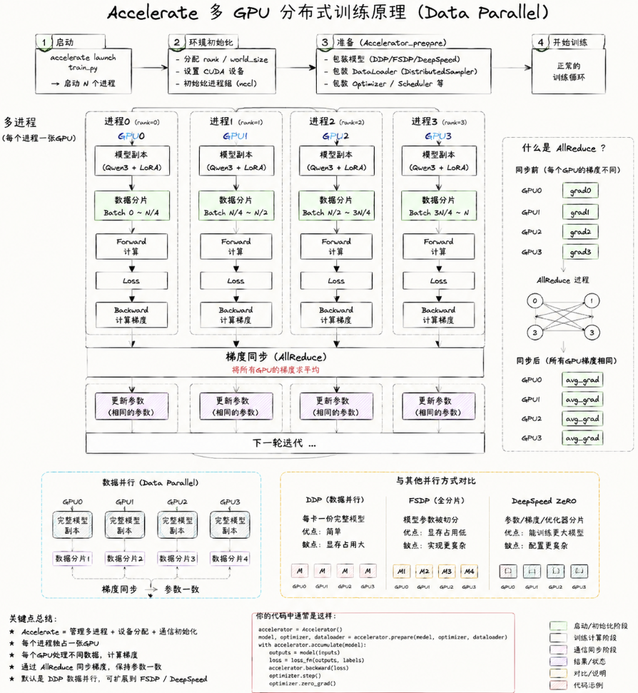
from accelerate import Accelerator
# 1. 初始化 Accelerator（它会自动读取默认的 config 文件）
accelerator = Accelerator()
# 2. 获取正确的当前设备（取代原先的 item.to('cuda')）
device = accelerator.device
# 3. 把所有核心组件扔进 prepare
# 这一步会自动处理：模型多卡复制、DataParallel、DDP 的 Sampler 包装、优化器适配
model, optimizer, train_dataloader, lr_scheduler = accelerator.prepare(
model, optimizer, train_dataloader, lr_scheduler
)
for batch in train_dataloader:
optimizer.zero_grad()
# 注意：此时 batch 内的数据可以通过 accelerator.prepare 自动放置，
# 或者手动采用：inputs = batch_data.to(device)
outputs = model(inputs)
loss = loss_function(outputs, targets)
# 4. 替换原有的 loss.backward()，接管混合精度和多卡梯度同步
accelerator.backward(loss)
optimizer.step()
lr_scheduler.step()
Accelerate 与 TRL 集成
因为 Transformers Trainer 天然集成 Accelerate，所以在使用 TRL 的 SFTTrainer 进行训练时，可以通过 accelerate launch 的方式启动分布式训练。命令如下所示：
其中， config 配置文件通过一个交互式脚本获得：
Accelerate 配置讲解
在传统的 PyTorch DDP（分布式数据并行）中，每个显卡上都必须完整复制一份模型参数、优化器状态和梯度。随着模型参数量变大，显存很容易撑爆（OOM）。
Hugging Face accelerate 集成的 DeepSpeed ZeRO（Zero Redundancy Optimizer） 技术就是为了解决这个问题。它的核心思想是：“空间换时间”，把模型状态（优化器状态、梯度、参数）分片（Shard）存储到不同的显卡上，在需要前向/反向传播时再通过集合通信临时拼接起来。
# Accelerate + DeepSpeed 基础计算环境配置
compute_environment: LOCAL_MACHINE # 计算环境：LOCAL_MACHINE (本地机器/机房集群) 或 AWS
distributed_type: DEERSPEED # 分布式训练类型：这里指定使用 DEEPSPEED
num_machines: 1 # 参与训练的机器（节点）总数，单机填 1
machine_rank: 0 # 当前机器的 Rank 编号（单机固定为 0，多机时第一台为 0, 第二台为 1...）
# 硬件与进程分配（非常关键）
gpu_ids: all # 使用哪些 GPU。可以填 "all" 自动使用全部，或指定 "0,1,2,3"
num_processes: 8 # 总进程数：在数据并行中，通常【严格等于你的 GPU 总张数】。比如 8 卡就填 8
# 混合精度配置
mixed_precision: bf16 # 混合精度类型：可选 no (FP32) / fp16 / bf16
downcast_bf16: 'no' # 是否将常规数据转换为 bf16（通常保持 'no'）
# DeepSpeed 专属插件核心配置区
deepspeed_config:
# 1. 核心的 ZeRO 阶段选择
zero_stage: 3 # 核心参数！ZeRO 级别选择：
# 2. 梯度累积与裁剪
gradient_accumulation_steps: 2 # 梯度累积步数
gradient_clipping: 1.0 # 梯度裁剪阈值：防止梯度爆炸，通常设为 1.0
# 3. 内存/显存卸载（Offload）策略 —— 拯救小显存的终极绝招
offload_optimizer_device: cpu # 优化器状态卸载：可选 cpu / nvme / none offload_param_device: none # 模型参数卸载：可选 cpu / nvme / none。
# 4. 显存优化与通信
zero3_init_flag: true # 仅在 Stage 3 生效。是否在构建模型时就进行分布式初始化。
zero3_save_16bit_model: true # 训练结束后，是否直接将 Stage 3 切碎的权重合并并保存为单份普通的 16bit 模型文件
# 5. 自动配置接管（由 Accelerate 自动从 Python 代码中捕获，保持 auto 即可）
auto_configure: true # 是否让 Accelerate 自动填充其余 DeepSpeed 参数
train_batch_size: auto # 训练 Batch Size：设为 auto，Accelerate 会自动根据你在 DataLoader 设定的 size * GPU数 计算
train_micro_batch_size_per_gpu: auto # 单卡前向传播的 Batch Size：自动获取你的 DataLoader.batch_size
# 其他边缘配置项
main_training_function: main # 你的 Python 训练脚本中的主函数入口名称，默认是 main
rdzv_backend: static # 多机多卡通信的汇合点后端（单机保持 static 即可）
same_network: true # 多机时是否在同一个局域网内
use_cpu: false # 是否强制使用 CPU 训练（大模型千万别开）
LLaMa-Factory
LLaMA-Factory 是一个简单易用且高效的大型语言模型训练与微调平台。通过 LLaMA-Factory，可以在无需编写任何代码的前提下，在本地完成上百种预训练模型的微调。
LLama-Factory 安装与使用
在云服务器上，有代理，就配置代理，没有代理，如果管官方加速，就用官方加速，没有官方加速，直接手动下载，然后上传上去也行。
git clone --depth 1 https://github.com/hiyouga/LLaMA-Factory.git
cd LLaMA-Factory
pip install -e .
pip install -r requirements/metrics.txt
auto-dl 官方加速，没什么用..
之后，就可以启动 LLama-Factory 了
如果使用云服务器，又想通过 127.0.0.1 访问，则需要配置 ssh
之后，就可以通过图形化界面去进行模型的微调了，具体可以参考：LLama SFT
LLama 数据格式
目前，LLama-Factory 支持 Alpaca 格式和 ShareGPT 格式的数据集。 dataset_info.json 文件包含所有预处理过的本地数据集和在线数据集 。如果您想使用自定义数据集，则必须将数据集的定义及其内容添加到 dataset_info.json 文件中。
LLM 部署与评测
VLLM
VLLM 概述
vLLM 是一个面向大语言模型推理的高性能推理框架，专为大规模并发请求优化，底层基于Pytorch 构建。
VLLM 安装
vllm 需要在 linux 环境部署，我在本地 wsl 跑通这个流程即可
# 官方推荐（我wsl挂梯子，都下不下来这个自动选的 torch）
uv pip install vllm --torch-backend=auto
# 实际直接下载，就不会报网络错误了
uv pip install vllm
# 国内镜像源
uv pip install vllm -i https://pypi.tuna.tsinghua.edu.cn/simple
VLLM 部署模型
具体可参考：online-serving
# 前台运行
vllm serve ./Qwen3-8B --served-model-name Qwen3-8B --max-model-len 32K
# 后台运行
nohup vllm serve /root/autodl-tmp/models/Qwen3-8B --served-model-name Qwen3-8B --max-model-len 32K >vllm.log 2>&1 &
充满波折的部署之路啊，我天，折腾我一下午，遇到了这些问题，首先是 RuntimeError: UVA is not available，这个问题在 github 上有人问，然后作者告诉了解决方案，也就是改一下这个变量：
然后，又报错找不到 gcc，我的 wsl2 确实是干净的 ubantu 系统，所以确实没有，执行下面命令安装：
然后，又报了 nvcc 相关的错误，我的 wsl 子系统也确实没有下载 CUDA Toolkit 工具包，这个东西在我们使用 pytorch 代码的时候确实不需要，因为 PyTorch wheel 自带 CUDA runtime，但是对于 vllm 来说，好像需要，下载教程
# 下载CUDA 13.0本地安装包
wget https://developer.download.nvidia.com/compute/cuda/13.0.1/local_installers/cuda-repo-ubuntu2404-13-0-local_13.0.1-580.82.07-1_amd64.deb
# 安装本地仓库包
sudo dpkg -i cuda-repo-ubuntu2404-13-0-local_13.0.1-580.82.07-1_amd64.deb
# 复制GPG密钥
sudo cp /var/cuda-repo-ubuntu2404-13-0-local/cuda-*-keyring.gpg /usr/share/keyrings/
# 更新APT源列表并安装
sudo apt-get update
sudo apt-get -y install cuda-toolkit-13-0
下载完成后，配置环境变量：
# 编辑
nano ~/.bashrc
# 在文件末尾加入
export CUDA_HOME=/usr/local/cuda-13.0
export PATH=$CUDA_HOME/bin:$PATH
# 激活
source ~/.bashrc
历经千辛万苦，终于成功了，下次我他妈绝对租云服务器跑了，太nm折腾了，不过也学到了一些东西，最起码我知道 vllm 想跑起来，必须得有真正的 cuda toolkit，pytorch 自带的运行时环境不行。
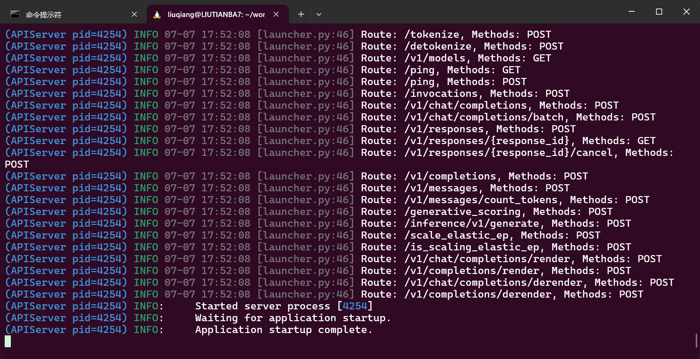
推理框架
推理框架是什么？
推理框架是专门用于部署和运行大型语言模型（LLM）的系统软件。它通过针对性的架构设计和底层优化，将训练好的模型转化为能够高效处理海量并发请求的线上服务。与原生深度学习框架相比，专用推理框架能够显著降低内存占用、提升吞吐量并减少延迟，尤其适合对响应速度要求高的生产环境。
推理框架解决的问题
- 当多个生成请求同时到来时，如何高效调度推理任务，保证服务稳定运行？
- 在长上下文与高并发场景下，如何更高效地管理显存，尤其是 KV Cache？
- 如何提升推理系统的整体性能，包括吞吐量、时延以及 GPU 利用率？
PagedAttention
在传统的 KV-Cache 机制下，给用户分配的显存空间通常是连续的，所以会出现 "显存碎片" 问题，可能会导致当前显存剩余空间大于所需空间，但是却没有一段连续的空间能够满足，这与操作系统中内存采用连续储存，会出现 "内存碎片" 一致，而操作系统通过 “分页机制” 解决了内存碎片问题，PagedAttention 借鉴了它的思想：
PagedAttention 会预先申请一块K-V cache显存池，同时，它会将当前显存池划分为大小相同，固定的 block, 同时，Block Manager 负责 block 的配分与回收，这样，每个请求对应的 K-V Cache 在显存中就不再是连续的了。
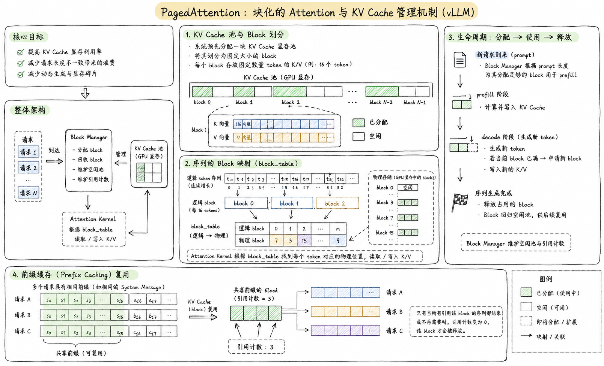
此外，当多个请求有相同的前缀的时候，那这些前缀对应的 K-V 是相同，PagedAttention 下，这些请求可以复用同一个 block，如下图所示：
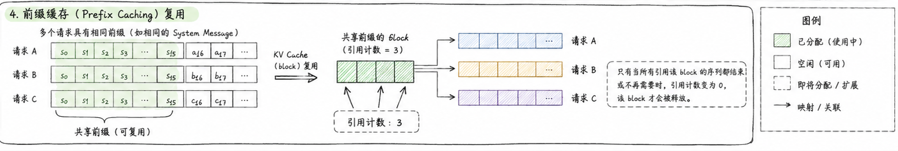
调度器与连续批处理
大语言模型服务通常需要同时处理大量用户请求，这些请求会不断到来，每个请求的 Prompt 长度、生成长度以及执行进度都不同。如果让每个请求独占 GPU，不仅 GPU 利用率很低，而且无法支持高并发。
Scheduler 与 Continuous 机制如下图：
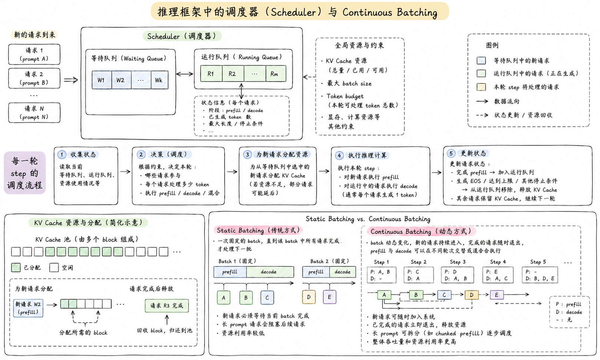
可以概括为下面几个部分：
- Waiting Queue：存放尚未开始执行的新请求。
- Running Queue：存放已经完成 Prefill、正在 Decode 的请求
- KV Cache Pool：保存所有请求的 KV Cache，由 Block Manager 管理分配和回收。
- Scheduler：决定每轮 Step 执行哪些请求，并协调 GPU 资源。
- Continuous Batching：每轮重新组织 Batch，请求可以动态加入、退出或继续执行。
其他优化方案
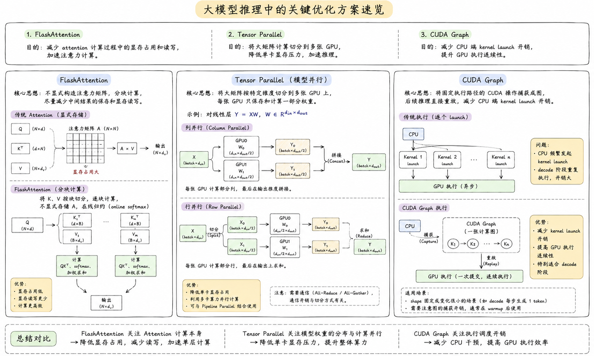
1、FlashAttention：FlashAttention 的核心思路不是改变注意力机制本身，而是换一种更高效的计算方式：该方式尽量减少中间结果的保存，尽量减少显存读写，从而让 GPU 更连续、更高效地完成整段计算。
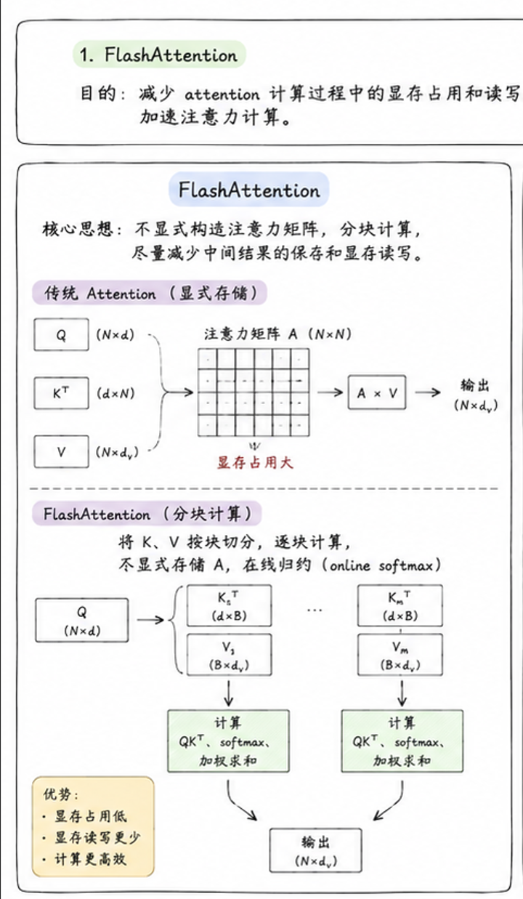
2、Tensor parallel：Tensor parallel 是推理框架中常见的模型并行策略。它通过将 Transformer 层中的大矩阵计算切分到多张 GPU 上执行，使每张 GPU 只保存和计算部分权重，从而降低单卡显存压力，并利用多卡算力加速推理。
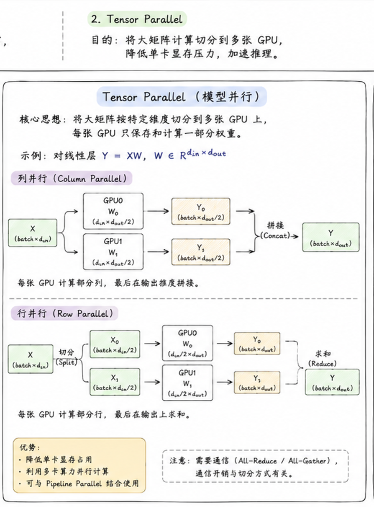
3、CUDA Graph：在传统 CUDA 执行模型中，CPU 需要逐个发起 kernel launch。虽然 kernel launch 通常是异步的，但在大模型推理中，尤其是 decode 阶段，每一步都会重复执行大量相似的 GPU kernel，频繁的 CPU 调度和 kernel launch 会带来额外开销。
CUDA Graph 会将一组固定形状、固定执行路径的 CUDA 操作捕获成一张计算图，后续推理时可以直接 重放 整张图，而不需要 CPU 每次逐个提交 kernel。这样可以减少 CPU 端调度和 kernel launch 开销，提高 GPU 执行的连续性，尤其适合 decode 这种形状相对稳定、重复执行的场景。
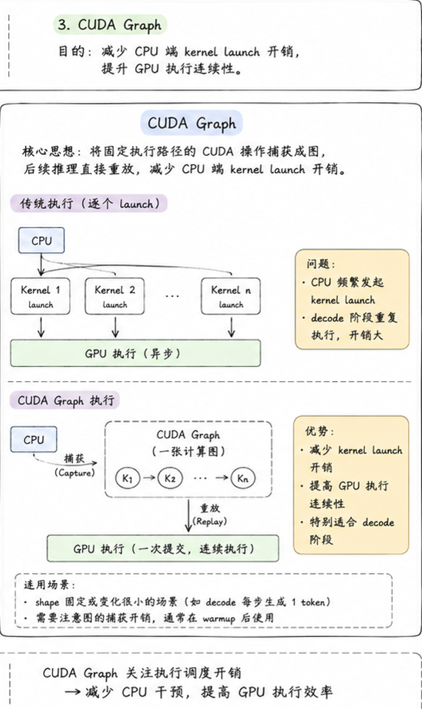
EvalScope
这部分知识直接参考官方文档即可。
2027.07.08，llm 完结撒花，收获颇多，在之前学微调的时候，很多东西真的不清楚为什么这样，但是有了nlp，深度学习，llm 基础知识的前提下，就知道了为什么模型的输入 input_ids 是什么样子，输出是什么样子，怎么处理 chatModel 的输入输出等等。